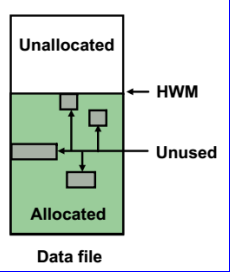

例如: EXP SCOTT/TIGER GRANTS=Y TABLES=(EMP,DEPT,MGR) 或 TABLES=(T1:P1,T1:P2), 如果 T1 是分区表
exp SCOTT/TIGER tables=scott.emp,scott.dept file=scott.dmp
exp owner=scott file=scott.dmp//导出指定的用户
exp tablespaces=users file=user_ts.dmp //导出指定的表空间
USERID 必须是命令行中的第一个参数。
关键字 说明 (默认值) 关键字 说明 (默认值)
--------------------------------------------------------------------------
USERID 用户名/口 令 FULL 导出整个文件 (N)
BUFFER 数据缓冲区大小 OWNER 所有者用户名列表
FILE 输出文件 (EXPDAT.DMP) TABLES 表名列表
COMPRESS 导入到一个区 (Y) RECORDLENGTH IO 记录的长度
GRANTS 导出权限 (Y) INCTYPE 增量导出类型
INDEXES 导出索引 (Y) RECORD 跟踪增量导出 (Y)
DIRECT 直接路径 (N) TRIGGERS 导出触发器 (Y)
LOG 屏幕输出的日志文件 STATISTICS 分析对象 (ESTIMATE)
ROWS 导出数据行 (Y) PARFILE 参数文件名
CONSISTENT 交叉表的一致性 (N) CONSTRAINTS 导出的约束条件 (Y)
OBJECT_CONSISTENT 只在对象导出期间设置为只读的事务处理 (N)
FEEDBACK 每 x 行显示进度 (0)
FILESIZE 每个转储文件的最大大小
FLASHBACK_SCN 用于将会话快照设置回以前状态的 SCN
FLASHBACK_TIME 用于获取最接近指定时间的 SCN 的时间
QUERY 用于导出表的子集的 select 子句
RESUMABLE 遇到与空格相关的错误时挂起 (N)
RESUMABLE_NAME 用于标识可恢复语句的文本字符串
RESUMABLE_TIMEOUT RESUMABLE 的等待时间
TTS_FULL_CHECK 对 TTS 执行完整或部分相关性检查
TABLESPACES 要导出的表空间列表
TRANSPORT_TABLESPACE 导出可传输的表空间元数据 (N)
TEMPLATE 调用 iAS 模式导出的模板名
创建测试分区表：
分区表就是将表在物理存储层面分成多个小的片段,这些片段即 称为分区,每个分区保存表的一部分数据,表的分区对上层应用是完全透明的,从应用的角度来看,表在逻辑上依然是一个整体。
SQL> create table cupid_test_exp(id number(10)) partition by range(id) ( partition p1 values less than(10), partition p2 values less than(20), partition p3 values less than(maxvalue) )
准备数据：
导出表分区
exp oacms/oacms buffer=5000 file='d:/cupid_test_exp.dmp' tables=cupid_test_exp:p1,cupid_test_exp:p2;
导入表分区
imp oacms/oacms buffer=5000 file='d:/cupid_test_exp.dmp' tables=cupid_test_exp:p2 ignore=y;
1.导出一个完整数据库
#exp system/password file=biodb_db log=biodb_db full=y
2.导出数据库定义而不导出数据
#exp system/password file=biodb_db log=biodb_db full=y rows=n
3. 指定导 出某个用户或某组用户的全部表、索引和其他对象
导 出某个用户全部表、索引和其他对 象
[catalyst@localhost bin]$ exp system/wtsgyh1972 file=c##biodbuser log=c##biodbuser owner=c##biodbuser
Export: Release 19.0.0.0.0 - Production on 星期五 10月 27 02:57:18 2023
Version 19.3.0.0.0
Copyright (c) 1982, 2019, Oracle and/or its affiliates. All rights reserved.
连接到: Oracle Database 19c Enterprise Edition Release 19.0.0.0.0 - Production
Version 19.3.0.0.0
已导出 UTF8 字符集和 AL16UTF16 NCHAR 字符集
服务器使用 AL32UTF8 字符集 (可能的字符集转换)
即将导出指定的用户...
. 正在导出 pre-schema 过程对象和操作
. 正在导出用户 C##BIODBUSER 的外部函数库名
. 导出 PUBLIC 类型同义词
. 正在导出专用类型同义词
. 正在导出用户 C##BIODBUSER 的对象类型定义
即将导出 C##BIODBUSER 的对象...
. 正在导出数据库链接
. 正在导出序号
. 正在导出簇定义
. 即将导出 C##BIODBUSER 的表通过常规路径...
. . 正在导出 表 DEP导出 了 1 行 <<< 这 里表示输出了！！！
EXP-00091: 正在导出有问题的统计信息。
. . 正在导出 表 EMP导出 了 1 行
EXP-00091: 正在导出有问题的统计信息。
. . 正在导出 表 EMP_DEP导出 了 0 行
EXP-00091: 正在导出有问题的统计信息。
. . 正在导出 表 MYEMP导出 了 0 行
EXP-00091: 正在导出有问题的统计信息。
EXP-00091: 正在导出有问题的统计信息。
. . 正在导出 表 MYTABL导出 了 0 行
EXP-00091: 正在导出有问题的统计信息。
EXP-00091: 正在导出有问题的统计信息。
. . 正在导出 表 READER导出 了 0 行
EXP-00091: 正在导出有问题的统计信息。
. 正在导出同义词
. 正在导出视图
. 正在导出存储过程
. 正在导出运算符
. 正在导出引用完整性约束条件
. 正在导出触发器
. 正在导出索引类型
. 正在导出位图, 功能性索引和可扩展索引
. 正在导出后期表活动
. 正在导出实体化视图
. 正在导出快照日志
. 正在导出作业队列
. 正在导出刷新组和子组
. 正在导出维
. 正在导出 post-schema 过程对象和操作
. 正在导出统计信息
导出成功终止, 但出现警告。
导 出某个用户或某组用户的全部表、索引和其他对象
$ exp system/wtsgyh1972 file=alluserdb log=alluseroutlog owner=c##biodbuser,c##drugdbuser //不能用：owner=(c##biodbuser,c##drugdbuser)
Export: Release 19.0.0.0.0 - Production on 星期五 10月 27 03:02:07 2023
Version 19.3.0.0.0
Copyright (c) 1982, 2019, Oracle and/or its affiliates. All rights reserved.
连接到: Oracle Database 19c Enterprise Edition Release 19.0.0.0.0 - Production
Version 19.3.0.0.0
已导出 UTF8 字符集和 AL16UTF16 NCHAR 字符集
服务器使用 AL32UTF8 字符集 (可能的字符集转换)
即将导出指定的用户...
. 正在导出 pre-schema 过程对象和操作
. 正在导出用户 C##BIODBUSER 的外部函数库名
. 正在导出用户 C##DRUGDBUSER 的外部函数库名
. 导出 PUBLIC 类型同义词
. 正在导出专用类型同义词
. 导出 PUBLIC 类型同义词
. 正在导出专用类型同义词
. 正在导出用户 C##BIODBUSER 的对象类型定义
. 正在导出用户 C##DRUGDBUSER 的对象类型定义
即将导出 C##BIODBUSER 的对象...
. 正在导出数据库链接
. 正在导出序号
. 正在导出簇定义
. 即将导出 C##BIODBUSER 的表通过常规路径...
. . 正在导出 表 DEP导出 了 1 行 <<第一个用户
EXP-00091: 正在导出有问题的统计信息。
. . 正在导出 表 EMP导出 了 1 行
EXP-00091: 正在导出有问题的统计信息。
. . 正在导出 表 EMP_DEP导出 了 0 行
EXP-00091: 正在导出有问题的统计信息。
. . 正在导出 表 MYEMP导出 了 0 行
EXP-00091: 正在导出有问题的统计信息。
EXP-00091: 正在导出有问题的统计信息。
. . 正在导出 表 MYTABL导出 了 0 行
EXP-00091: 正在导出有问题的统计信息。
EXP-00091: 正在导出有问题的统计信息。
. . 正在导出 表 READER导出 了 0 行
EXP-00091: 正在导出有问题的统计信息。
. 正在导出同义词
. 正在导出视图
. 正在导出存储过程
. 正在导出运算符
即将导出 C##DRUGDBUSER 的对 象... <<第二个用户
. 正在导出数据库链接
. 正在导出序号
. 正在导出簇定义
. 即将导出 C##DRUGDBUSER 的表通过常规路径...
. . 正在导出 表 BIODBSTD导出 了 1 行
EXP-00091: 正在导出有问题的统计信息。
. . 正在导出 表 DRUGCOURSEUSER导出 了 77 行
EXP-00091: 正在导出有问题的统计信息。
. . 正在导出 表 TEST_JSON导出 了 1 行
EXP-00091: 正在导出有问题的统计信息。
. 正在导出同义词
. 正在导出视图
. 正在导出存储过程
. 正在导出运算符
. 正在导出引用完整性约束条件
. 正在导出触发器
. 正在导出索引类型
. 正在导出位图, 功能性索引和可扩展索引
. 正在导出后期表活动
. 正在导出实体化视图
. 正在导出快照日志
. 正在导出作业队列
. 正在导出刷新组和子组
. 正在导出维
. 正在导出引用完整性约束条件
. 正在导出触发器
. 正在导出索引类型
. 正在导出位图, 功能性索引和可扩展索引
. 正在导出后期表活动
. 正在导出实体化视图
. 正在导出快照日志
. 正在导出作业队列
. 正在导出刷新组和子组
. 正在导出维
. 正在导出 post-schema 过程对象和操作
. 正在导出统计信息
导出成功终止, 但出现警告。
注意：在导出用户时，尽管已经得到了这个用户的所有对象，但是还是不能得到这些对象引用的任何同义词。
解决方法：
用以下SQL*Plus命令创建一个脚本文件，运行这个脚本文件可以获得一个重建C##BIODBUSER所 属对象的 全部公共同义词的可执行脚本，然后在目标数据库上运行该脚本就可重建同义词了。
SET LINESIZE 132
SET PAGESIZE 0 SET TRIMSPOOL ON SPOOL biodbuser.syn
SELECT 'CREATE public SYNONYM ' || synonym_name || 'FOR' ||table_owner||'.'||table_name||';' FROM dba_synonyms WHERE TABLE_owner='SYS' AND owner='PUBLIC'; //THIS IS OK!!!!!
SPOOL OFF
///note use above the results like:
SQL> SELECT 'CREATE public SYNONYM ' || synonym_name || 'FOR' ||table_owner||'.'||table_name||';' FROM dba_synonyms WHERE TABLE_owner='SYS' AND owner='PUBLIC';
CREATE public SYNONYM DUALFORSYS.DUAL; ////THE: DUALFORSYS.DUAL IS FROM ====>>> synonym_name || 'FOR' ||table_owner||'.'||table_name||
CREATE public SYNONYM MAP_OBJECTFORSYS.MAP_OBJECT;
$ ./sqlplus /nolog
CREATE SYNONYM personnel FOR c##biodbuser.emp;
CREATE public SYNONYM personnel FOR C##BIODBUSER.EMP;
SELECT * FROM dba_synonyms WHERE TABLE_owner='SYS' AND owner='PUBLIC'; //MUST BE: CAN USE: select * from DBA_SYNONYMS IN SQLDEveloper to see the col names!!!!
4. 导出一个或多个指定表
$ exp c##biodbuser/biodb123 file=biodbemp log=biodbemp tables=EMP
Export: Release 19.0.0.0.0 - Production on 星期五 10月 27 05:13:09 2023
Version 19.3.0.0.0
Copyright (c) 1982, 2019, Oracle and/or its affiliates. All rights reserved.
连接到: Oracle Database 19c Enterprise Edition Release 19.0.0.0.0 - Production
Version 19.3.0.0.0
已导出 UTF8 字符集和 AL16UTF16 NCHAR 字符集
服务器使用 AL32UTF8 字符集 (可能的字符集转换)
即将导出指定的表通过常规路径...
. . 正在导出 表 EMP导出 了 1 行
EXP-00091: 正在导出有问题的统计信息。
EXP-00091: 正在导出有问题的统计信息。
导出成功终止, 但出现警告。
$ exp system/wtsgyh1972 file=EMP log=EMP tables=c##biodbuser.EMP
Export: Release 19.0.0.0.0 - Production on 星期五 10月 27 05:12:41 2023
Version 19.3.0.0.0
Copyright (c) 1982, 2019, Oracle and/or its affiliates. All rights reserved.
连接到: Oracle Database 19c Enterprise Edition Release 19.0.0.0.0 - Production
Version 19.3.0.0.0
已导出 UTF8 字符集和 AL16UTF16 NCHAR 字符集
服务器使用 AL32UTF8 字符集 (可能的字符集转换)
即将导出指定的表通过常规路径...
当前的用户已更改为 C##BIODBUSER
. . 正在导出 表 EMP导出 了 1 行
EXP-00091: 正在导出有问题的统计信息。
EXP-00091: 正在导出有问题的统计信息。
导出成功终止, 但出现警告。
$ exp system/wtsgyh1972 file=empdep log=dmpdep tables=c##biodbuser.EMP,c##biodbuser.dep
Export: Release 19.0.0.0.0 - Production on 星期五 10月 27 05:12:06 2023
Version 19.3.0.0.0
Copyright (c) 1982, 2019, Oracle and/or its affiliates. All rights reserved.
连接到: Oracle Database 19c Enterprise Edition Release 19.0.0.0.0 - Production
Version 19.3.0.0.0
已导出 UTF8 字符集和 AL16UTF16 NCHAR 字符集
服务器使用 AL32UTF8 字符集 (可能的字符集转换)
即将导出指定的表通过常规路径...
当前的用户已更改为 C##BIODBUSER
. . 正在导出 表 EMP导出 了 1 行
EXP-00091: 正在导出有问题的统计信息。
. . 正在导出 表 DEP导出 了 1 行
EXP-00091: 正在导出有问题的统计信息。
EXP-00091: 正在导出有问题的统计信息。
EXP-00091: 正在导出有问题的统计信息。
导出成功终止, 但出现警告。
5. 导出表数据的子集(oracle8i以上)
NT系统：
exp system/manager query='Where salad_type='FRUIT'' tables=amy.salad_type
file=fruit log=fruit
UNIX系统：
exp system/manager query=\"Where salad_type=\'FRUIT\'\" tables=amy.salad_type
file=fruit log=fruit
6. 用多个文件分割一个导出文件
exp system/manager
file=(paycheck_1,paycheck_2,paycheck_3,paycheck_4)
log=paycheck, filesize=1G tables=hr.paycheck
7. 使用参数文件
exp system/manager parfile=bible_tables.par
bible_tables.par参数文件：
#Export the sample tables used for the Oracle8i Database Administrator's Bible.
file=bible_tables
log=bible_tables
tables=(
amy.artist
amy.books
seapark.checkup
seapark.items
)
8. 增量导出
“完全”增量导出(complete)，即备份整个数据库
exp system/wtsgyh1972 inctype=complete file=empdep //OK
“增量型”增量导出(incremental)，即备份上一次备份后改变的数据
exp system/wtsgyh1972 inctype=incremental file=empdep
“累计型”增量导出(cumulative)，即备份上一次“完全”导出之后改变的数据
exp system/wtsgyh1972 inctype=cumulative file=empdep
（三）向 导方式备份
采用 向导方式使用 exp 和 imp
[catalyst@localhost hustdbroot]$ exp
Export: Release 19.0.0.0.0 - Production on 星期四 10月 26 05:19:14 2023
Version 19.3.0.0.0
Copyright (c) 1982, 2019, Oracle and/or its affiliates. All rights reserved.
用户名: sys as sysdba (或者: c##biodbuser as sysdba ) //注意用法!!!!
口令:
连接到: Oracle Database 19c Enterprise Edition Release 19.0.0.0.0 - Production
Version 19.3.0.0.0
输入数组提取缓冲区大小: 4096 >
导出文件: expdat.dmp > mytest.dmp
(1)E(完整的数据库), (2)U(用户) 或 (3)T(表): (2)U >
导出权限 (yes/no): yes >
导出表数据 (yes/no): yes >
压缩区 (yes/no): yes >
已导出 UTF8 字符集和 AL16UTF16 NCHAR 字符集
服务器使用 AL32UTF8 字符集 (可能的字符集转换)
即将导出指定的用户...
要导出的用户: (按 RETURN 退出) >
成功终止导出, 没有出现警告。
接下来用imp导入上面的结果：
（1）读懂上述导出过程描述，使用 imp 进行导入 c:\mytest.dmp。
（2）使用 exp 导出 scott 模式下的 emp 和 dept 表。
2.命令行方式：带有命令参数，联系按照三种方式进行数 据备份和恢复。
（1）用户模式： 导出用户所有对象以及对象中的数据；
exp c##biodbuser/orcl file=d:\wy.dmp owner=(scott);
（2）表模式： 导出用户所有表或者指定的表；
exp scott/orcl file=d:\wytables.dmp tables=(dept);
（3）整个数据库： 导出数据库中所有对象。
exp cott/orcl file=d:\wydatabase.dmp full=y;
（4）exp scott/orcl tables=(emp，dept) file=d:\mydata.dmp grants=y;
（三）联机备份
按以下操作过程操作备份和恢复。
SQL> conn sys/orcl as sysdba;
SQL> archive log list
数据库日志模式 非存档模式
自动存档 禁用
存档终点 USE_DB_RECOVERY_FILE_DEST
最早的联机日志序列 119
当前日志序列 121
SQL> shutdown immediate;
数据库已经关闭。
已经卸载数据库。
ORACLE 例程已经关闭。
SQL> startup mount;
ORACLE 例程已经启动。
Total System Global Area 1071333376 bytes
Fixed Size 1375792 bytes
Variable Size 645923280 bytes
Database Buffers 419430400 bytes
Redo Buffers 4603904 bytes
数据库装载完毕。
SQL> alter database archivelog;
数据库已更改。
SQL> alter database open;
数据库已更改。
SQL> alter tablespace users begin backup; //备份开始
表空间已更改。
SQL> alter tablespace users end backup; //备份结束
表空间已更改。
恢复过程如下：
SQL> alter system archive log current;
系统已更改。
SQL> alter system switch logfile;
系统已更改。
SQL> shutdown immediate;
数据库已经关闭。
已经卸载数据库
ORACLE 例程已经关闭。
SQL> startup;
ORACLE 例程已经启动。
Total System Global Area 1071333376 bytes
Fixed Size 1375792 bytes
Variable Size 645923280 bytes
Database Buffers 419430400 bytes
Redo Buffers 4603904 bytes
数据库装载完毕。
数据库已经打开。
SQL> shutdown immediate;
数据库已经关闭。
已经卸载数据库。
ORACLE 例程已经关闭。
SQL> startup
ORACLE 例程已经启动。
Total System Global Area 1071333376 bytes
Fixed Size 1375792 bytes
Variable Size 645923280 bytes
Database Buffers 419430400 bytes
Redo Buffers 4603904 bytes
数据库装载完毕。
ORA-01157: 无法标识/锁定 数据文件 4 - 请参阅 DBWR 跟踪文件
ORA-01110: 数据文件 4: 'D:\APP\ADMINISTRATOR\ORADATA\ORCL\USERS01.DBF'
SQL> set linesize 200;
SQL> select * from v$recover_file;
FILE# ONLINE ONLINE_ ERROR CHANGE# TIME
---------- ------- ---------- ------------------------------------- ---------- ------------
4 ONLINE ONLINE FILE NOT FOUND 0
SQL> alter database datafile 4 offline drop;
数据库已更改。
SQL> alter database open；
数据库已更改。
将数据文件拷贝回原路径存放
SQL> recover datafile 4;
ORA-00279: 更改 3782020 (在 06/13/2020 11:31:22 生成) 对于线程 1 是必需的
ORA-00289: 建议:
D:\APP\ADMINISTRATOR\FLASH_RECOVERY_AREA\ORCL\ARCHIVELOG\2020_06_13\
O1_MF_1_121_COWCX0WH_.ARC
ORA-00280: 更改 3782020 (用于线程 1) 在序列 #121 中
指定日志: {<RET>=suggested | filename | AUTO | CANCEL}
Auto //用户输入
ORA-00279: 更改 3787896 (在 06/13/2020 11:59:27 生成) 对于线程 1 是必需的
ORA-00289: 建议:
D:\APP\ADMINISTRATOR\FLASH_RECOVERY_AREA\ORCL\ARCHIVELOG\2020_06_13\
O1_MF_1_122_COWGOG0Z_.ARC
ORA-00280: 更改 3787896 (用于线程 1) 在序列 #122 中
已应用的日志。
完成介质恢复。
SQL> alter database datafile 4 online;
数据库已更改。
恢复完成
（四）数据泵技术
Oracle 中创建目录对象时，需要使用 CREATE DIRECTORY 语句。并且要对使用目录的
账户进行授权（grant）。Directory 对象包含 Read,Write 两个权限。Create 之前应提前建
立物理文件目录。备份的数据将来就存储在这个目录里。
例子：导出 bookstore/admin 用户下的某个表
1. 连接 Oracle 数据库。
SQL> conn sys/orcl as sysdba
Connected.
2.创建一个操作目录，同时需要使用操作系统命令在硬盘上创建这个物理目录。
SQL> CREATE DIRECTORY MY_DIR AS 'd:\mydata';
Directory created.
3.授予用户权限。
SQL> GRANT READ,WRITE ON DIRECTORY MY_DIR TO bookstore;
Grant succeeded.
4.导出 数据表
C:>expdp bookstore/admin directory=MY_DIR DUMPFILE=wy.dmp tables=student
同样方法，请大家自行练习导出，数据库、用户模式和表空间。
数据泵导入方法
使用 impdp 导入上例导出的数据
C:>Impdp bookstore/admin directory=MY_DIR dumpfile=wy.dmp tables=student
思考：emp 与 empdp 工具的作用和性能
（五）使用RMAN备份数据库
1 RMAN的概述
1.1 功能
1）Recovery
MANager，是备份和恢复数据库的管理工具
2）由server process进行备份和恢复
3）rman备份的文件种类
①datafile（database、tablespace、datafile）
②controlfile、spfile
③archivelog
4）在归档模式下支持非一致性备份（热备）
非归档方式的RMAN只能冷备，并在mount下做，但手工备份在mount下cp出来的备份对于RMAN是不可用的。
非归档方式的RMAN恢复只能还原最后一次备份
1.2 特点
RMAN备份可以忽略两种block(块的概念可以看看上级预备！) Unallocated: 未分配的block
Unused: 未使用的block

1）备份时自动检查数据文件是否有坏块，因为RMAN是ORACLE BLOCK级备份技术
2）不备份临时表空间
3）可以实现增量备份
4）支持多通道并行工作
5）可以备份ASM文件
1.3 架构
1）可连接三类数据库：target database(备份的目标库)，catalog
database(目录数据库)，duplicate database(复制数据库)。
2）存储设备：disk、tape（sbt磁带机）存放备份文件的设备
3）channel：目标库和存储设备之间备份恢复通道（服务进程）默认最少启动一个channel，可同时启动多个channel并发操
作。
4）server process：用于备份和恢复的进程
5）rman的元数据：记录备份的信息（放在目标库的controlfile里）
6）catalog database :集中管理、存放备份的元数据，还可以存储备份脚本
7）MML:media manage layer介质管理层：用于管理磁带机的库文件或驱动
1.5 RMAN的备份类别
1）backupset：(备份集)
不备份datafile里从未使用块、可以实现增量备份（可以备份到disk和tape）。可以实施compression,
如果只启用一个channel，默认会把所有备份的datafile放入到一个backupset里，并且生成一个备份片backup
piece。
2）image copy（映像文件)：
实际上和手工cp 类似的，备份datafile所有的数据块, 不能作为增量备份的基础（即0级增量备份），只能备份到disk
，不能备份到tape，优点是可以省略还原步骤，恢复数据库速度快
一、备份策略的制定
数据库数据是非常重要的资产，但数据丢失是一个巨大的挑战。为了有效地应对数据丢失的风险，Oracle提供了强大而可靠的RMAN备份和恢复工 具。下面将介绍Oracle RMAN备份恢复的实战技巧，帮助您应对数据丢失的挑战，并确保数据库的安全性和可用性。1、确定备份类型：根据数 据的重要性和恢复时间的要求，选择全备份、增量备份或归档日志备份。全备份可以完整地备份整个数据库，增量备份仅备份发生变化的数据块，而归档日 志备份用于备份数据库的归档日志文件。
2、设定备份频率：确定备份的频率是很重要的。根据业务需求和数据变更的频率，设置合理的备份频率。通常建议进行定期的全备份和增量备份，以及即 时备份归档日志文件。
3、选择存储介质：选择适当的存储介质来存储备份数据。可以使用磁盘或磁带作为备份存储介质。使用磁盘可以提供更快的备份和恢复速度，而使用磁带 则可以提供更长时间的存储。
二、备份操作步骤
1、创建备份集：使用RMAN命令创建备份集，包括指定备份类型、备份集名称和备份目标等。可以选择性地包含归档日志文件和控制文件。
2、执行备份：运行RMAN命令执行备份操作。根据事先设置的备份策略，可以执行全备份、增量备份或归档日志备份。备份过程中会将数据块、表空间 或归档日志文件备份到目标位置。
3、验证备份：在备份完成后，建议验证备份的完整性和可用性。可以通过还原备份并进行测试来验证备份数据的一致性和可恢复性。
ORACLE数据库有两种运行方式：
一是归档方式(ARCHIVELOG):
归档方式的目的是当数据库发生故障时最大限度恢复数据库，可以保证不丢失任何已提交的数据；
二是不归档方式(NOARCHIVELOG): 只能恢复数据库到最近的回收点(冷备份或是逻辑备份)。
rman实际由两部分组成,可执行文件和recover.bsq文件.recover.bsq文件实 质上是库文件,可执行文件从recover.bsq文件中析取代码来创建在目标数据库上执行的pl/sql调用
Recovery Manager 是一个以客户端方式运行的备份与恢复工具, RMAN 可以用来备份和还原 数据库文件、归档日志和控制文件。它也可以用来执行完全或不完全的数据库恢复。。
RMAN 特点：
(1)跳过未使用的数据块；
(2)采用定制算法压缩备份；
(3)执行增量备份；
(4)支持 块级别的恢复
使用 RMAN 进行 备份和恢复/操作 应具备以下条件：
（1）数据库处于归档模式。
（2）创建了恢复目录。
（3）RMAN 连接 到目标数据库。
（4）RMAN 进行相应的参数设置。
看看rman命令在哪?
$ which rman
/opt/app/oracle/product/19.3.000/db_home/bin/rman
$ ./lsnrctl start
$ ./sqlplus /nolog
SQL> conn sys/admin as sysdba
查看是否是归档 模式:
可以在 sqldeveloper中 使用SQL语句
#archive log list;
数据库日志模 式 不归档模式 <<<<<< 看看这里！！
自动归 档 已禁用
归档目 标 USE_DB_RECOVERY_FILE_DEST
最早的联机日志序 列 24
当前日志序 列 26
可以在 sqldeveloper中使用SQL语句
#select dbid, name, log_mode, platform_name from v$database;

注意： LOG_MODE列下面的值： NOARCHIVELOG (即为非 归档模式)
也可以直接在SQLPlus中进行查寻:
SQL> select dbid, name, log_mode, platform_name from v$database;
如果处于非归档模式，则需要先关闭数据库：
执行
SQL>shutdown immediate; // 关闭 数据库和实例，只能在SQLPLUS中执行这个语句！
SQL>startup mount; // 启动数据库，不打开实例。
SQL>alter database archivelog; //切换实例为归档模式。
再 次查看是否是归档模式
SQL>archive log list;
数据库日志模 式 归档日志模式
自动归 档 已启用
归档目 标 USE_DB_RECOVERY_FILE_DEST
最早的联机日志序 列 24
下一个存档日志序 列 26
当前日志序 列 26
SQL> alter database open; //打开实例
SQL> select name from v$datafile; //查看数据文件放置的路径
//创建恢复目录表空间
linux用法
SQL> create tablespace rman_ts datafile '/opt/app/oracle/oradata/rman_ts.dbf' size 200M;
windows用法: SQL>create tablespace rman_ts datafile 'D:\app\wtscrystal\oradata\rman_ts.dbf' size 200M;
结果显示: tablespace RMAN_TS 已创建。
也可以这样：
SQL>create tablespace rman_ts datafile '/opt/app/oracle/oradata/rman_ts.dbf' size 2G autoextend off; //大小2G不自动扩展
看看有没有目录和 文件: /opt/app/oracle/oradata/rman_ts.dbf
(注:
创建好的表空间可以用:
SQL>drop tablespace rman_ts来 删除
或 用
SQL>drop tablespace rman_ts including contents and datafiles; //完整删除表空间
特别的是: 如果不小心直接删除了表空间文件： /opt/app/oracle/oradata/rman_ts.dbf （比 如用右键： 永久删除）
这时如果想再次创建同名的表空间会报错!
SQL> alter database datafile '/opt/app/oracle/rman_ts.dbf' offline drop;
数据库已更改。
SQL> drop tablespace rman_ts including contents;
表空间已删除。)
在linux下
SQL> show con_name;
CON_NAME
------------------------------
CDB$ROOT
SQL> show pdbs;
CON_ID CON_NAME OPEN MODE RESTRICTED
---------- ------------------------------ ---------- ----------
2 PDB$SEED READ ONLY NO
3 PDBDRUG MOUNTED (linux下是这样)
SQL> create user c##rman identified by wtsgyh1972 default tablespace rman_ts temporary tablespace temp;
用户已创建。 （linux下Oracle 19.3可以成功创建c##rman）
SQL> create user c##rman identified by wtsgyh1972 default tablespace rman_ts temporary tablespace temp; //创建 RMAN 用户
//windows下可的 oracle 12.2可能得这样:
SQL>create user c##rman identified by wtsgyh1972;
SQL>alter user c##rman identified by wtsgyh1972 default tablespace rman_ts temporary tablespace temp; //OK!!!!!!
如果出现错误报告:
SQL 错误: ORA-65048: 在可插入数据库 PDBDRUGDB 中处理当前 DDL 语句时出错
ORA-00959: 表空间 'RMAN_TS' 不存在
在CDB中创建普通用户时，如果在CREATE USER语句中指定了任何默认表空间、临时表空间、Quota或者Profile，则它们必须同时存在于所有从属于该CDB 的PDB中。
这里可以看看:
SQL> show con_name
CON_NAME
------------------------------
CDB$ROOT
SQL> show pdbs
CON_ID CON_NAME OPEN MODE RESTRICTED
---------- ------------------------------ ---------- ----------
2 PDB$SEED READ ONLY NO
3 PDBDRUGDB READ WRITE NO (Windows下是这样)
SQL> alter session set container=PDBDRUGDB;
会话已更改。
SQL> show pdbs
CON_ID CON_NAME OPEN MODE RESTRICTED
---------- ------------------------------ ---------- ----------
3 PDBDRUGDB READ WRITE NO //看看现在是不是只有这个了???
SQL> grant connect, recovery_catalog_owner, resource to c##rman; //对 c##rman 授权
授权成功。
SQL> commit;
提交完成。
SQL> grant unlimited tablespace to c##rman;
授权成功。
SQL> commit;
SQL> conn c##rman/wtsgyh1972 //测试一下, 用c##rman连 接
已连接。
SQL> show user
USER 为 "C##RMAN"
RMAN配置: 配置一个监听 rman target / catalog rman/rman
/opt/app/oracle/product/19.3.000/db_home/network/admin/listener.ora
RMAN =
(DESCRIPTION_LIST =
(DESCRIPTION =
(ADDRESS_LIST =
(ADDRESS = (PROTOCOL = TCP)(HOST = localhost)(PORT = 1521))
(ADDRESS = (PROTOCOL = IPC)(KEY = EXTPROC1521))
)
)
)
打开另一个命令行终端: 使用 rman连接, 并在目录数据库中创建恢 复目 录
RMAN 连接方法
1）本地连接
RMAN工具和target database在同一台服务器
$ rman target /
恢复管理器: Release 19.0.0.0.0 - Production on 星期日 11月 5 20:09:41 2023
Version 19.3.0.0.0
Copyright (c) 1982, 2019, Oracle and/or its affiliates. All
rights reserved.
已连接到目标数据库: DRUGDB (DBID=2324541357)
2）远程连接
RMAN客户端通过ORACLE_NET连接target database 在target database
启动监听，在client配置tnsnames.ora。
$ tnsping drugdb
$ rman target sys/wtsgyh1972@drugdb //通过本地服务名连接
恢复管理器: Release 19.0.0.0.0 - Production on 星期日 11月 5 20:10:46 2023
Version 19.3.0.0.0
Copyright (c) 1982, 2019, Oracle and/or its affiliates. All
rights reserved.
已连接到目标数据库: DRUGDB (DBID=2324541357)
**********************
$ rman target / catalog c##rman/wtsgyh1972 //like this
也可以如下面所示的命令:
#rman target sys/wtsgyh1972 catalog c##rman/wtsgyh1972 //OK on linux, 同时连接目标数据库target和catalog.
//////////////#rman target sys/wtsgyh1972@drugdb catalog c##rman/wtsgyh1972@drugdb //also ok on linux!wts
///////////////#rman catalog c##rman/wtsgyh1972
恢复管理器: Release 19.0.0.0.0 - Production on 星期日 11月 5 03:22:40 2023
Version 19.3.0.0.0
Copyright (c) 1982, 2019, Oracle and/or its affiliates. All rights reserved.
已连接到目标数据库: DRUGDB (DBID=2324541357)
连接到恢复目录数据库
//如果出: 未安装恢复目录,可能有问题!!!!! 表示没有: RMAN>create catalog tablespace rman_ts
RMAN> //这时候会显示提示符RMAN>，表 示启动 RMAN
RMAN 命令格式练习：
交互式，即stand alone式命令：
RMAN> shutdown immediate;
RMAN>startup force mount;
RMAN> alter database open;
RMAN>sql 'alter system switch logfile';
RMAN>sql 'select * from c##scott.emp'; //
批处理方式：即job方式
RMAN>run{
shutdown immediate;
startup mount;
allocate channel c1 type disk;
allocate channel c2 type disk;
backup database format '/opt/app/%d_%s.bak';
alter database open;
release channel c1;
release channel c2;
}
即于EM方式：WEB方式
************************************************************
RMAN>create catalog tablespace rman_ts //使用 rman_ts 表空间创建恢复目录。 把刚刚的表空间创建进来
恢复目录已创建 (OKKKKKK!)
RMAN>register database; //store control file to dest //注册数据库
注册在恢复目录中的数据库
正在启动恢复目录的全部重新同步
完成全部重新同步 (OKKKKK)
11. 正式练习RMAN备份操作：
Run命 令行简介：
RMAN备份需要用RUN，单行命令是不够的。要把几个 命令链接起来，必须把它们组合到一个块中, 块用RUN作为前缀，并括在{}中。
一个打开的完成备份，包括归档日志文件的备份呵呵删除，示例
RMAN备份练习一：
RMAN备份开始:
在提示符RMAN>后面输入下面的代码:
RMAN> Run {
allocate channel dev1 type disk;
backup database; //这就是那个备份指令, 这里指备份整个数据库
release channel dev1;
}
//此命令可以在linux和windows下都可以成功运行--> OK!!!!wts
CENTOS 7.X Oracle Linux 19.3运行结果, 请看这里.
这里是: windows 7 Oracle 12.2运行的结果:
********************************第一个RMAN备份结束
RMAN备份练习二：
RMAN> run {allocate channel d1 type disk;
2> allocate channel d2 type disk;
3> backup as compressed backupset database format ‘/home/oracle/db_%U.bset’;
4> backup as compressed backupset archivelog all format ‘/home/oracle/arch_%U.bset’ delete all input;
}
RMAN备份练习三：
只备份某个表空间:RMAN>run{
backup tablespace rman_ts;
}
RMAN备份练习四：
只备份某个表空间:RMAN>run{
backup tablespace rman_ts; //sure ok!!!
}
使用RMAN进行增量 备份, 只备份发生更的数据块:
RMAN>run{
backup incremental level 1 database; //ok
}
复制
在run块中，前两个命令ALLOCATE CHANNEL，分配一个通道，会启动一个服务器进程。每个通道都需要名称（只是一个随意的字符串，本例是d1和d2），必须指定是 使用磁带还是磁盘作为 备份目标。启动多个通道，会启用备份的并行性。RMAN会把工作负载分布到通道上。第三行指定完整的数据库备份，使用FORMAT指 定输出块的名称。第四行指定所有的归档日志文件都应备份和删除。FORMAT规范包含%U。这是一个变量，会扩展为一个名称，该名称 包含8字符的任意字符串，以确保块运行多次时，总是生成不同的块名。备份的类型是COMPRESSED BACKUPSET。压缩通常不仅会减少备份块的大小，还会提高操作的速度。
默认的备份类型是备份集。另一个类型是映像副本。要撞见副本，可以使用如下命令：
BACKUP AS COPY DATAFILE ‘/u01/oradata/orcl/system1.dbf’ FORMAT ‘/U02/backup/orcl/system01.dbf’;
BACKUP AS COPY DATABASE;
复制
第一个命令把一个数据文件复制到指定的目标。第二个命令把整个数据库复制到默认的目标，即快速恢复区。
永久RMAN设置
1.设置和清理默认值
使用SHOW ALL命令查看默认值，即RMAN的环境变量
RMAN> show all;
db_unique_name 为 DRUGDB 的数据库的 RMAN 配置参数为:
CONFIGURE RETENTION POLICY TO REDUNDANCY 1; # default
CONFIGURE BACKUP OPTIMIZATION OFF; # default
CONFIGURE DEFAULT DEVICE TYPE TO DISK; # default
CONFIGURE CONTROLFILE AUTOBACKUP ON; # default
CONFIGURE CONTROLFILE AUTOBACKUP FORMAT FOR DEVICE TYPE DISK TO '%F'; # default
CONFIGURE DEVICE TYPE DISK PARALLELISM 1 BACKUP TYPE TO BACKUPSET; # default
CONFIGURE DATAFILE BACKUP COPIES FOR DEVICE TYPE DISK TO 1; # default
CONFIGURE ARCHIVELOG BACKUP COPIES FOR DEVICE TYPE DISK TO 1; # default
CONFIGURE MAXSETSIZE TO UNLIMITED; # default
CONFIGURE ENCRYPTION FOR DATABASE OFF; # default
CONFIGURE ENCRYPTION ALGORITHM 'AES128'; # default
CONFIGURE COMPRESSION ALGORITHM 'BASIC' AS OF RELEASE 'DEFAULT' OPTIMIZE FOR LOAD TRUE ; # default
CONFIGURE RMAN OUTPUT TO KEEP FOR 7 DAYS; # default
CONFIGURE ARCHIVELOG DELETION POLICY TO NONE; # default
CONFIGURE SNAPSHOT CONTROLFILE NAME TO '/opt/app/oracle/product/19.3.000/db_home/dbs/snapcf_drugdb.f'; # default
各参数说明：
RETENTION POLICY ： 指定RMAN应创建什么备份，合适可以删除它们。默认值是每个文件的一个副本。
OPTIMIZATION 确定，即使已有足够的备份，RMAN是否仍要根据请求备份文件。默认值是总是备份它们。
DEFAULT DEVICE TYPE TO DISK 表示除非明确指出，否则RMAN就仅启动磁盘通道，不写入磁带。
CONTROLFILE AUTOBACKUP OFF 禁止RMAN自动备份控制文件，作为其他备份操作的一部分。
AUTOBACKUP FORMAT 为控制文件的自动备份生成名称和位置。
DEVICE TYPE DISK PARALLELISM 1 BACKUP TYPE TO BACKUPSET 表示，在默认情况下，备份到磁盘时，只启动一个通道，该备份是一个未压缩的备份集。
BACKUP COPIES 指定在备份数据文件和归档日志文件时，应生成备份集的多少副本。
MAXSETSIZE 可以限制每个备份集的大小。如果达到了这个数字，就关闭该备份集块，继续备份到一个新的备份集中。
ENCRYPTION 默认禁用备份集的加密。
COMPRESSION 如果请求压缩，就使用BASIC算法，它是免费的。
ARCHIVELOG DELETION POLICY 允许RMAN根据各种条件，自动删除不再需要的归档日志。
SNAPSHOT CONTROLFILE 为控制文件的临时副本指定名称和位置，这些临时副本创建为控制文件备份机制的一部分。
需求示例：总是可以把数据库还原到前两周的任意时刻；创建达到该目标所需的备份，备份写入磁盘，使用4个通道的并行程度；控制文件必 须总是包含在任何备份中；备份是压缩过的备份集，存储在c:\db_backups目录中；备份集块根据库名、备份日期和唯一字符串 来命名；归档日志在备份到磁盘上两次后删除。
要配置这个需求，应运行如下命令：
configure retention policy to recovery window of 14 days;
configurebackup optimization on;
configure controlfile autobackupon;
configure device typedisk parallelism 4 backup type to compressed backupset;
configure channel device typedisk format ‘c:\db_backups%d_%T_%u’;
configure archivelog deletion policyto backup 2 times to disk;
再使用命令就能满足上述需求：
backup database;
backup archivelog all delete input;
永久配置设置是为每个目标数据库配置的，存储在RMAN库中，要返回默认值，可以连接目标，执行CLEAR命令：
configure retention policy clear;
configure backup optimization clear;
configure controlfile autobackup clear;
configure device typedisk clear;
configure channel device typedisk clear;
configure archivelog deletion policy clear;
2.使用保留策略
使用恢复窗口或冗余，就可以自动保留和管理备份。使用恢复窗口，RMAN会分局需要保留许多备份，知道数据库返回恢复窗口的任意时间 点位置。例如，在7天的恢复窗口中，RMAN会维护足够多的映像副本、增量备份和归档重做日志，确保数据库可以还原和恢复前7天内的 任意时间点。如果使用快速恢复区，且新备份需要磁盘空间，则不需要支持这个恢复窗口的任何备份都标记为OBSOLETE，并由 RMAN自动删除。
相反，冗余策略告诉RMAN保留特定数量的备份。超过冗余策略中的指定的数字的任何额外副本或备份都标记为OBSOLETE。与恢复 窗口一样，如果需要磁盘空间，使用了快速恢复区，则过时的备份会自动删除。否则，可以使用DELETE OBSOLETE命令手工删除备份文件，更新目录。
如果保留策略设置为NONE，任何备份或副本就都不会过时，DBA必须手工删除目录和磁盘中不需要的备份。默认情况下，保留策略是一 个副本（保留策略设置为1）。使用下面的RMAN命令，可以把保留策略设置为两个副本：
configure retention policy to redundancy 2;
下面的命令把保留策略设置为4天的恢复窗口：
configure retention policy to recovery window of 4 days;
Oracle最佳实践建议，使用恢复窗口，在发现错误之前执行时间点恢复。
当RMAN外部的备份系统把磁盘备份存储到磁带中，并删除了它们时，禁用保留策略是有用的。
configure retention policy to none;
3.格式指定符
为了生成名称，需要配置永久格式指定符，使用字面量（如目录名）和变量组合。变量如下：
%d 数据库名
%e 归档日志序列号
%f 绝对文件号
%F 组合数据库标识符（DBID）、日期、月份、年份和序列号，用短横线隔开
%c 双重备份中多个副本的副本号
%I DBID
%N 表空间名，占8个字符
%t 备份集时间戳
%p 备份集中的块号
%s 备份集号
%u 实际上，是8个随机字符，派生与备份集号和时间
%U 系统生成的唯一文件名（默认）。对于备份集，它等价于%u_%p_%c；对于数据文件影响副本，它是data- D-%d_id-%I_TS-%N_FNO-%f_%u；对于归档日志映像副本，它是arch- D-%d_id-%I_S-%e_T-%h_A-%a_%u；对于控制文件映像副本，它是cf-D_%d-id-%I_%u
**************************************END OF RMAN
列出详细备份信息
备份集（Backup Sets）,镜像备份(image copies),proxy copies的信息
RMAN> list backup;
备份集列表
===================
BS 关键字 类型 LV 大小 设备类型 经过时间 完成时间
------- ---- -- ---------- ----------- ------------ ------------------
100 Full 17.95M DISK 00:00:00 2023:10:2921:07:24
BP 关键字: 102 状态: AVAILABLE 已压缩: NO 标记: TAG20231029T210724
段名:/opt/app/oracle/product/19.3.000/db_home/dbs/c- 2324541357-20231029-00
包含的 SPFILE: 修改时间: 2023:10:2920:52:25
SPFILE db_unique_name: DRUGDB
包括的控制文件: Ckp SCN: 3889632 Ckp 时间: 2023:10:2921:07:24
BS 关键字 类型 LV 大小 设备类型 经过时间 完成时间
------- ---- -- ---------- ----------- ------------ ------------------
101 Full 17.95M DISK 00:00:01 2023:11:0504:23:43
BP 关键字: 103 状态: AVAILABLE 已压缩: NO 标记: TAG20231105T042342
段名:/opt/app/oracle/product/19.3.000/db_home/dbs/c- 2324541357-20231105-00
包含的 SPFILE: 修改时间: 2023:11:0503:28:43
SPFILE db_unique_name: DRUGDB
包括的控制文件: Ckp SCN: 4274242 Ckp 时间: 2023:11:0504:23:42
BS 关键字 类型 LV 大小 设备类型 经过时间 完成时间
------- ---- -- ---------- ----------- ------------ ------------------
111 Full 17.95M DISK 00:00:00 2023:11:0505:08:45
BP 关键字: 114 状态: AVAILABLE 已压缩: NO 标记: TAG20231105T050845
段名:/opt/app/oracle/product/19.3.000/db_home/dbs/c- 2324541357-20231105-01
包含的 SPFILE: 修改时间: 2023:11:0503:28:43
SPFILE db_unique_name: DRUGDB
包括的控制文件: Ckp SCN: 4284204 Ckp 时间: 2023:11:0505:08:45
BS 关键字 类型 LV 大小 设备类型 经过时间 完成时间
------- ---- -- ---------- ----------- ------------ ------------------
121 Full 1.48G DISK 00:00:07 2023:11:0505:09:12
BP 关键字: 126 状态: AVAILABLE 已压缩: NO 标记: TAG20231105T050904
段名:/opt/app/oracle/product/19.3.000/db_home/dbs/042amibh_1_1
备份集 121 中的数据文件列表
File LV Type Ckp SCN Ckp 时间 Abs Fuz SCN Sparse Name
---- -- ---- ---------- ------------------ ----------- ------ ----
1 Full 4284327 2023:11:0505:09:05 NO /opt/app/oracle/oradata/DRUGDB/system01.dbf
3 Full 4284327 2023:11:0505:09:05 NO /opt/app/oracle/oradata/DRUGDB/sysaux01.dbf
4 Full 4284327 2023:11:0505:09:05 NO /opt/app/oracle/oradata/DRUGDB/undotbs01.dbf
7 Full 4284327 2023:11:0505:09:05 NO /opt/app/oracle/oradata/DRUGDB/users01.dbf
15 Full 4284327 2023:11:0505:09:05 NO /opt/app/oracle/oradata/DRUGDB/rman_ts.dbf
BS 关键字 类型 LV 大小 设备类型 经过时间 完成时间
------- ---- -- ---------- ----------- ------------ ------------------
122 Full 486.99M DISK 00:00:03 2023:11:0505:09:23
BP 关键字: 127 状态: AVAILABLE 已压缩: NO 标记: TAG20231105T050904
段名:/opt/app/oracle/product/19.3.000/db_home/dbs/052amic0_1_1
备份集 122 中的数据文件列表
容器 ID: 3, PDB 名称: PDBDRUG
File LV Type Ckp SCN Ckp 时间 Abs Fuz SCN Sparse Name
---- -- ---- ---------- ------------------ ----------- ------ ----
9 Full 3771584 2023:10:2705:30:42 NO /opt/app/oracle/oradata/DRUGDB/pdbdrug/system01.dbf
10 Full 3771584 2023:10:2705:30:42 NO /opt/app/oracle/oradata/DRUGDB/pdbdrug/sysaux01.dbf
11 Full 3771584 2023:10:2705:30:42 NO /opt/app/oracle/oradata/DRUGDB/pdbdrug/undotbs01.dbf
12 Full 3771584 2023:10:2705:30:42 NO /opt/app/oracle/oradata/DRUGDB/pdbdrug/users01.dbf
BS 关键字 类型 LV 大小 设备类型 经过时间 完成时间
------- ---- -- ---------- ----------- ------------ ------------------
123 Full 552.21M DISK 00:00:04 2023:11:0505:10:09
BP 关键字: 128 状态: AVAILABLE 已压缩: NO 标记: TAG20231105T050904
段名:/opt/app/oracle/product/19.3.000/db_home/dbs/062amidd_1_1
备份集 123 中的数据文件列表
容器 ID: 2, PDB 名称: PDB$SEED
File LV Type Ckp SCN Ckp 时间 Abs Fuz SCN Sparse Name
---- -- ---- ---------- ------------------ ----------- ------ ----
5 Full 2138344 2023:05:1305:07:36 NO /opt/app/oracle/oradata/DRUGDB/pdbseed/system01.dbf
6 Full 2138344 2023:05:1305:07:36 NO /opt/app/oracle/oradata/DRUGDB/pdbseed/sysaux01.dbf
8 Full 2138344 2023:05:1305:07:36 NO /opt/app/oracle/oradata/DRUGDB/pdbseed/undotbs01.dbf
BS 关键字 类型 LV 大小 设备类型 经过时间 完成时间
------- ---- -- ---------- ----------- ------------ ------------------
145 Full 17.95M DISK 00:00:05 2023:11:0505:10:27
BP 关键字: 149 状态: AVAILABLE 已压缩: NO 标记: TAG20231105T051022
段名:/opt/app/oracle/product/19.3.000/db_home/dbs/c- 2324541357-20231105-02
包含的 SPFILE: 修改时间: 2023:11:0503:28:43
SPFILE db_unique_name: DRUGDB
包括的控制文件: Ckp SCN: 4284414 Ckp 时间: 2023:11:0505:10:22
RMAN> list backupset; //列出： 备份集（Backup Sets）,proxy copies信息
RMAN> list backup of database; //列出所有数据文件的备份信息
比较以上三个语句输出结果的差别.
RMAN> list backup of tablespace users; //列出特定表空间的所有数据文件备份集
备份集列表
===================
BS 关键字 类型 LV 大小 设备类型 经过时间 完成时间
------- ---- -- ---------- ----------- ------------ ------------------
121 Full 1.48G DISK 00:00:07 2023:11:0505:09:12
BP 关键字: 126 状态: AVAILABLE 已压缩: NO 标记: TAG20231105T050904
段名:/opt/app/oracle/product/19.3.000/db_home/dbs/042amibh_1_1
备份集 121 中的数据文件列表
File LV Type Ckp SCN Ckp 时间 Abs Fuz SCN Sparse Name
---- -- ---- ---------- ------------------ ----------- ------ ----
7 Full 4284327 2023:11:0505:09:05 NO /opt/app/oracle/oradata/DRUGDB/users01.dbf
RMAN> list backup of tablespace rman_ts;
备份集列表
===================
BS 关键字 类型 LV 大小 设备类型 经过时间 完成时间
------- ---- -- ---------- ----------- ------------ ------------------
121 Full 1.48G DISK 00:00:07 2023:11:0505:09:12
BP 关键字: 126 状态: AVAILABLE 已压缩: NO 标记: TAG20231105T050904
段名:/opt/app/oracle/product/19.3.000/db_home/dbs /042amibh_1_1
备份集 121 中的数据文件列表
File LV Type Ckp SCN Ckp 时间 Abs Fuz SCN Sparse Name
---- -- ---- ---------- ------------------ ----------- ------ ----
15 Full 4284327 2023:11:0505:09:05 NO /opt/app/oracle/oradata/DRUGDB/rman_ts.dbf
RMAN> list backup of datafile 1;
RMAN> list backup of datafile 3;
RMAN> list backup of datafile 4; ///opt/app/oracle/oradata/DRUGDB/undotbs01.dbf
RMAN> list backup of datafile 9; //
前面查到的备份集： 122 Full 486.99M DISK中的：
9 Full 3771584 2023:10:2705:30:42 NO /opt/app/oracle/oradata/DRUGDB/pdbdrug/system01.dbf
直接写文件查看
RMAN>list backup of datafile '/opt/app/oracle/oradata/DRUGDB/pdbdrug/system01.dbf';
按备份类型列出备份
RMAN> list backup by file;
列出控制文件信息
RMAN> list backup of controlfile;
查看已备份的归档日志信息
RMAN> list backup of archivelog all;
RMAN> list backup of spfile; //列出spfile文件信息
RMAN> list archivelog all; //列出所有的归档日志
RMAN> list expired archivelog all; //列出所有失效的归档日志
RMAN> list copy; //列出备份的映像副本信息
RMAN> list expired backup; //列出过期备份信息
RMAN> list backup summary; //概述可用的备份
查看备份成功的历史记录
直接在sqldeveloper中输入下面的SQL：
SELECT * FROM V$RMAN_STATUS WHERE START_TIME >= TO_DATE(&START_TIME,'YYYY-MM-DD HH24:MI:SS') AND END_TIME <= TO_DATE(&END_TIME ,'YYYY-MM-DD HH24:MI:SS') AND OPERATION ='BACKUP' AND STATUS ='COMPLETED'
点sqldeveloper GUI的运行sql语句的那个绿色按钮：
分别输入要查的备份的起始和终末时间，注意格式： 20230101 - 20231231

看看STATUS的值是以下那个：
RUNNING、RUNNING WITH WARNINGS、RUNNING WITH ERRORS、COMPLETED、COMPLETED WITH WARNINGS、COMPLETED WITH ERRORS、FAILED；
在sqldeveloper中输入：
SELECT ROW_TYPE, COMMAND_ID, OPERATION, STATUS,OBJECT_TYPE FROM V$RMAN_STATUS WHERE START_TIME >= TO_DATE('2023-09-01 12:59:00', 'YYYY-MM-DD HH24:MI:SS');
看看查出的结果中： V$RMAN_STATUS里面有没有一条记录的STATUS为RUNNING状态， 这表示RMAN正在工作。
RMAN> / //故意在RMAN中随意执行一个错误命令
RMAN-00571: ===========================================================
RMAN-00569: =============== ERROR MESSAGE STACK FOLLOWS ===============
RMAN-00571: ===========================================================
RMAN-00558: 分析输入命令时出错
RMAN-01006: 在进行语法分析时发出出错信号
RMAN-02001: 无法识别的标点符号 "/"
再次在sqldeveloper中输入：
SELECT ROW_TYPE, COMMAND_ID, OPERATION, STATUS,OBJECT_TYPE FROM V$RMAN_STATUS WHERE START_TIME >= TO_DATE('2023-09-01 12:59:00', 'YYYY-MM-DD HH24:MI:SS');
看看查出的结果中： V$RMAN_STATUS里面的STATUS有没有不一样？ RUNNING WITH ERRORS
如果： 现在从RMAN中退出，会看到STAUS记录从"RUNNING WITH ERRORS"变成了"COMPLETED WITH ERRORS"
也可以从V$RMAN_BACKUP_JOB_DETAILS中查看RMAN备份更详细的信息
SELECT START_TIME, END_TIME, OUTPUT_DEVICE_TYPE, STATUS, ELAPSED_SECONDS, COMPRESSION_RATIO, INPUT_BYTES_DISPLAY, OUTPUT_BYTES_DISPLAY FROM V$RMAN_BACKUP_JOB_DETAILS ORDER BY START_TIME DESC;
查 看某个备份集SPFILE
SELECT DISTINCT A.SET_STAMP, B.COMPLETION_TIME, HANDLE FROM V$BACKUP_SPFILE B, V$BACKUP_PIECE A WHERE A.SET_STAMP = B.SET_STAMP AND A.DELETED = 'NO' AND B.SET_STAMP = &SET_STAMP;
三、恢复操作步骤
1、准备恢复环境：在进行数据库恢复前，需准备好恢复环境，包括备份介质的连接、归档日志文件的准备以及必要的配置文件和参数设 置。
2、准备目标数据库：如果正在恢复到一个新的数据库实例，需先创建数据库实例并配置数据库参数，确保目标数据库的配置与备份数据兼 容。
3、执行恢复：运行RMAN命令执行数据恢复。根据备份类型和恢复的需求，可以选择完全恢复、不完全恢复或点恢复等恢复策略。
4、验证恢复：在恢复完成后，建议验证恢复的效果和数据的完整性。可以通过查询数据、执行业务操作和检查数据库日志来验证数据的一致 性和可用性。
四、备份恢复的 注意事项
1、定期测试恢 复策略：定期测试备份恢复策略是非常重要的。通过定期进行备份和恢复测试，可以确保备份数据的完整性和恢复过程的可靠性。测试结果应 该进行记录和分析，以便根据需要进行调整和优化。
2、保护备份文 件的安全：备份文件包含敏感数据，必须采取措施来保护其安全性。可以使用加密技术对备份文件进行加密，同时限制对备份文件的访问权 限。
3、监控备份和 恢复过程：持续监控备份和恢复过程是必要的。可以使用Oracle提供的监控工具来监视备份和恢复的进度和状态。及时发现问题并采取 适当的措施来解决。
Oracle RMAN备份恢复是应对数据丢失挑战的关键工具。通过制定合理的备份策略，正确执行备份和恢复操作，并遵循备份恢复的注意事项，可以 保证数据库数据的安全性和可用性。定期测试备份恢复策略，并保护备份文件的安全，同时持续监控备份和恢复过程，是确保备份恢复成功的 重要步骤。
Oracle上机RMAN恢复练习:
$rman target sys/wtsgyh1972 catalog rcat_manager/password@tnsname
$rman target sys/wtsgyh1972 catalog rcat_manager/password@drugdb
一 还原spfile
Oracle 11g 以前，我们可以从spfile来创建pfile，或者利用pfile来创建spfile。 在Oracle 11g后的版本，在管理spfile方面得到增强，可以从memory来创建pfile和spfile。
判断Oracle启动时使用spfile还是pfile
SQL>select decode(count(*),1,'spfile','pfile') from v$spparameter where rownum=1 and isspecified ='TRUE';
SQL>show parameter spfile;
1. 从运行的数据库内存恢复
SQL> shutdown immediate
//使用pfile/spfile 启动数据库
//startup 启动次序 spfile优先于pfile。
//如果在数据库的$ORACLE_HOME/dbs/目录下既有spfile又有pfile,使用spfile启动数据库，不需要指定参数文件路径（因为数据库会优先选择spfile启动）
//查找文件的顺序是 spfileSID.ora-〉spfile.ora-〉initSID.ora-〉init.ora（spfile优先于pfile）
SQL> startup pfile='/opt/app/oracle/product/19.3.000/db_home/dbs/initdrugdb.ora'
//windows: RMAN也可以
//RMAN>startup pfile='D:\app\wtscrystal\admin\drugdb\pfile\init.ora.48202321253'
//RMAN>startup pfile='D:\app\wtscrystal\product\12.1.0\dbhome_1\dbs\init.ora' //这个不行!!!!????
$ rman target sys/wtsgyh1972 catalog c##rman/wtsgyh1972 //上面关了oracle后需要重新连接rman
RMAN> create spfile from memory;
已处理语句
//如果报: ORA-32002: 无法创建已由实例使用的 SPFILE, 则需要用
//SQL>shutdown immediate
//SQL> startup pfile='/opt/app/oracle/product/19.3.000/db_home/dbs/initdrugdb.ora'
SQL> create spfile from memory; //sqlplus中也可以执行，但是有点不一样
文件已创建。
RMAN>Restore spfile from autobackup; //提取数据库spfile（默认还原最新的文件）
2. 使用rman自动控制文件备份: Flash Recovery Area,FRA闪回区
fast recovery area的作用：
快速恢复区域是Oracle数据库管理的空间，可用于保存RMAN磁盘备份、控制文件自动备份和存档的重做日志文件。
放置在此位置的文件由Oracle数据库维护，生成的文件名以Oracle托管文件（OMF）格式维护。平时在生产环境中很少见到有用fast recovery area的，一般在生产环境中数据量比较大，而fast recovery area对空间要求也比较高，多少了解一下。
SQL> show parameter db_recovery_file_dest
SQL> alter system set db_recovery_file_dest_size='1G' scope=both sid='*'; //需要启动数据库时用 spfile:
SQL>alter system set db_recovery_file_dest='+fra' scope=both sid='*';
LINUX:
RMAN>Restore spfile to '/tmp/spfiletemp.ora' from autobackup recovery area ='/data/prd/fast_recovery_area' db_name=DRUGDB;
//spfiletemp.ora 即为spfile, 二进制的文件
//windows: RMAN> Restore spfile to 'D:\spfiletemp.ora' from autobackup recovery area ='D:\app\fast_recovery_area' db_name=DRUGDB;
启动 restore 于 09-11月-23
使用通道 ORA_DISK_1
恢复区目标: /data/prd/fast_recovery_area
用于搜索的数据库名 (或数据库的唯一名称): DRUGDB
通道 ORA_DISK_1: 在恢复区中没有找到 AUTOBACKUP
通道 ORA_DISK_1: 寻找以下日期的 AUTOBACKUP: 20231109
通道 ORA_DISK_1: 寻找以下日期的 AUTOBACKUP: 20231108
通道 ORA_DISK_1: 寻找以下日期的 AUTOBACKUP: 20231107
通道 ORA_DISK_1: 寻找以下日期的 AUTOBACKUP: 20231106
通道 ORA_DISK_1: 已找到的 AUTOBACKUP: c-2324166520-20231106-02
通道 ORA_DISK_1: 正在从 AUTOBACKUP c-2324166520-20231106-02 还原 spfile
通道 ORA_DISK_1: 从 AUTOBACKUP 还原 SPFILE 已完成
完成 restore 于 09-11月-23
**********************
copy D:\spfiletemp.ora D:\app\wtscrystal\product\12.1.0\dbhome_1\dbs\spfileeuphy.ora
3.CDBPDB恢复
1. 恢复根容器
恢复步骤（如果是只有数据文件有问题可以用以下的指令进行）
startup mount; //可能需要: shutdown immediate;
Restore database root; //sure
recover database root;
alter database open;
2. 恢复种子容器
如果种子容器丢失，仍能成功打开数据库，控制台及alert日志都不会显示错误信息，
但可以通过v$recover_file发现是否丢了数据文件，也可以在show pdbs时看到PDB$SEED状态变成了mounted。
恢复步骤：
Restore pluggable database “PDB$SEED”;
Recover pluggable database “PDB$SEED”;
-- these next commands can be run later
Shutdown immediate;
startup
3. 恢复PDB
Rman支持一次恢复一个或多个pdb，恢复过程中不需停止其他pdb。
1）完整恢复PDB
要还原一个完整的pdb，首先必须关闭该pdb；若是恢复表空间或数据文件，可以不关闭。
下面这个例子一次恢复两个pdb：
rman target=/
alter pluggable database testpdb,tplug close;
restore pluggable database testpdb,tplug;
recover pluggable database testpdb,tplug;
alter pluggable database testpdb,tplug open;
也可以连接到pdb进行操作：
rman target=sys/sys@pdb1
SHUTDOWN IMMEDIATE;
RESTORE DATABASE;
RECOVER DATABASE;
STARTUP;
2）恢复PDB表空间
rman target sys/sys@PDB-TNSNAME
-- 其实跟恢复普通表空间是一样的
Alter tablespace users offline;
Alter tablespace data offline;
Restore tablespace users,data;
Recover tablespace users,data;
Alter tablespace users online;
Alter tablespace data online;
3）恢复PDB数据文件
rman target sys/sys@PDB-TNSNAME
-- 其实跟恢复普通数据文件是一样的
Alter database datafile 6 offline;
Alter database datafile '/u01/app/user01.dbf' offline;
Restore datafile 6;
Restore datafile '/u01/app/user01.dbf';
Recover datafile 6;
Recover datafile '/u01/app/user01.dbf';
Alter database datafile 6 online;
Alter database datafile '/u01/app/user01.dbf' online;
RMAN基本指令操作:
RMAN>report schema; //查看一些数据库信息
RMAN>list backup; //查看备份信息
恢复目录的备份
RMAN
exp/export
进入备份
rman target /
全备
RMAN>backup database;
RMAN>backup database_root;
如何用Oracle SQL Developer进行Oracle表数据备份（备份oracle表数据）
Oracle SQL Developer是一款功能强大的Oracle数据库管理和开发工具，可帮助用户在Oracle数据库中完成数据存储、报表处理、 查询分析等各种工作。
使用Oracle SQL Developer进行Oracle表数据备份。
1. 需要确保Oracle SQL Developer已经正确地安装并部署了所有的任务。登录Oracle SQL Developer，你可以看到Oracle的Object explorer菜单，此时正打开你的数据库中当前的表。导航到表所在的目录，然后单击要备份的表，右键点击，选择“export data”。
2. 在这个窗口中，你需要选择表的备份格式，你可以把表数据备份成csv文件、ASCII文件或其他BOH文件格式，取决于你未 来需要使用这些备份数据的方式。
比如，如果你要把表备份到数据库中，你就需要选择SQL格式；如果你要把备份数据导出到excel，你就可以选择CSV格式。
点击“Browse”来选择存放备份数据的目录，然后点击“next”。
接下来，将出现一个窗口，这个窗口可以帮助你编辑数据备份，比如你可以设置要导出的字段、数据格式、字符编码、查询条件等等。
3 在“execute”按钮上点击一下，系统即可开始生成表备份数据，当生成完毕后，你可以在你指定的存放备份数据的目录中获得 你要的表备份数据。
以上就是如何使用Oracle SQL Developer进行Oracle表数据备份的主要步骤，这是一种实用的备份方法，可以有效保护Oracle数据库中的数据，为用 户提供完善的安全性。
RMAN在数据库服务器的帮助下实现数据库文件、控制文件、数据库文件与控制文件的映像副本、归档日志文件、数据库服务器参数文件的备份。
RMAN的特点：
(1) 支持增量备份：传统的exp与expdp备份工具，只能实现一个完整备份而不能增量备份，RMAN采用备份级别实现增量备份，在一个完整的备 份基础上采用 增量备份可以大大减少备份的数量；
(2) 自动管理备份文件：RMAN备份的数据是RMAN自动管理的，包括文件名字，备份文件存储目录等；
(3) 自动化备份与恢复：在备份与恢复操作时，使用简单的指令就可以实现备份与恢复，执行过程完全有RMAN维护。
(4) 不产生重做信息： RMAN联机备份不产生重做信息。
(5) 支持映像复制： 使用RMAN可以实现映像复制，映像以操作系统的文件格式存在，这种复制类似于用户管理的脱机备份方式。
(6) 备份的数据文件压缩处理： RMAN提供一个参数，说明是否对备份文件进行压缩，压缩的备份文件以二进制文件格式存在，可以减少备份文件的存储空间。
(7) 备份文件有效性检查功能： 可以在备份之后恢复检测备份文件是否可用，避免无效恢复操作。
1 RMAN 脱机备份与还原
1.1 使用RMAN命令连接到数据库
[oracle@oracledb ~]$ rman target/
Recovery Manager: Release 11.2.0.1.0 - Production on Tue May 30 14:33:04 2017
Copyright (c) 1982, 2009, Oracle and/or its affiliates. All rights reserved.
connected to target database: ORCL (DBID=1452257309)
1.2 脱机备份之前确定数据库处于非归档模式下，使用管理员账号登录到数据库查看
SQL> archive log list;
Database log mode No Archive Mode
Automatic archival Disabled
Archive destination USE_DB_RECOVERY_FILE_DEST
Oldest online log sequence 1
Current log sequence
1.3 脱机备份时数据必须处于mount状态下，关机启动数据库到mount状态下
SQL> shutdown immediate
Database closed.
Database dismounted.
ORACLE instance shut down.
SQL> startup mount
ORACLE instance started.
Total System Global Area 450953216 bytes
Fixed Size 2214256 bytes
Variable Size 339740304 bytes
Database Buffers 104857600 bytes
Redo Buffers 4141056 bytes
Database mounted.
1.4 RMAN模式下输入脱机备份命令，系统会自动备份整个数据库到默认的目录下
RMAN> backup as compressed backupset database;
Starting backup at 30-MAY-17
using channel ORA_DISK_1
channel ORA_DISK_1: starting compressed full datafile backup set
channel ORA_DISK_1: specifying datafile(s) in backup set
input datafile file number=00005
name=/usr/oracle/app/oradata/orcl/CTRR_DATA.dbf
input datafile file number=00007
name=/home/oracle/data/CTRR_DATA_1.dbf
channel ORA_DISK_1: starting piece 1 at 30-MAY-17
channel ORA_DISK_1: finished piece 1 at 30-MAY-17
piece
handle=/usr/oracle/app/flash_recovery_area/ORCL/backupset/2017_05_30/o1_mf_nnndf_TAG20170530T105100_dlsqjoft_.bkp
tag=TAG20170530T105100
comment=NONE
channel ORA_DISK_1: backup set complete, elapsed time: 00:01:26
channel ORA_DISK_1: starting compressed full datafile backup set
channel ORA_DISK_1: specifying datafile(s) in backup set
input datafile file number=00009
name=/home/oracle/data/rman_ts1.dbf
input datafile file number=00006
name=/usr/oracle/app/oradata/orcl/APSALU3_DATA.dbf
channel ORA_DISK_1: starting piece 1 at 30-MAY-17
channel ORA_DISK_1: finished piece 1 at 30-MAY-17
piece
handle=/usr/oracle/app/flash_recovery_area/ORCL/backupset/2017_05_30/o1_mf_nnndf_TAG20170530T105100_dlsqmdbx_.bkp
tag=TAG20170530T105100
comment=NONE
channel ORA_DISK_1: backup set complete, elapsed time: 00:00:01
channel ORA_DISK_1: starting compressed full datafile backup set
channel ORA_DISK_1: specifying datafile(s) in backup set
input datafile file number=00001
name=/usr/oracle/app/oradata/orcl/system01.dbf
input datafile file number=00004
name=/usr/oracle/app/oradata/orcl/users01.dbf
input datafile file number=00008
name=/home/oracle/data/default_tablespace.dbf
input datafile file number=00003
name=/usr/oracle/app/oradata/orcl/undotbs01.dbf
input datafile file number=00002
name=/usr/oracle/app/oradata/orcl/sysaux01.dbf
channel ORA_DISK_1: starting piece 1 at 30-MAY-17
channel ORA_DISK_1: finished piece 1 at 30-MAY-17
piece
handle=/usr/oracle/app/flash_recovery_area/ORCL/backupset/2017_05_30/o1_mf_nnndf_TAG20170530T105100_dlsqmfgv_.bkp
tag=TAG20170530T105100
comment=NONE
channel ORA_DISK_1: backup set complete, elapsed time: 00:01:26
Finished backup at 30-MAY-17
Starting Control File and SPFILE Autobackup at 30-MAY-17
piece
handle=/usr/oracle/app/flash_recovery_area/ORCL/autobackup/2017_05_30/o1_mf_s_945338539_dlsqp4yv_.bkp
comment=NONE
Finished Control File and SPFILE Autobackup at 30-MAY-17
以上备份信息可以看出，RMAN将数据文件备份在目录/usr/oracle/app/flash_recovery_area/ORCL /backupset/下，将控制文件与服务器参数文件备份在/usr/oracle/app/flash_recovery_area /ORCL/autobackup/下。这里需要注意如果想要RMAN在整库备份时自动备份控制文件与服务器参数文件，需要设置参数
configure controlfile autobackup的值为on： configure controlfile autobackup on;
RMAN> configure controlfile autobackup on;
new RMAN configuration parameters:
CONFIGURE CONTROLFILE AUTOBACKUP ON;
new RMAN configuration parameters are successfully stored
此时使用RMAN完成了整个数据库的脱机备份。
备份完成之后用scott用户创建一个测试表，插入一条数据，等恢复完成之后看这个表是否还存在。
create table t_test1(id number, name varchar2(50));
insert into t_test1(id, name)
values(1,'latiny1');
commit;
非归档模式下实现脱机备份恢复
为了测试利用脱机备份文件完全恢复数据库，我们删除部分数据文件、全部控制文件模拟数据库文件丢失，然后进行恢复。
[root@oracledb orcl]# ls -l
total 4867456
-rw-r----- 1 oracle oinstall 524296192 May 30 12:12
APSALU3_DATA.dbf
-rw-r----- 1 oracle oinstall 9748480 May 30 14:48 control01.ctl
-rw-r----- 1 oracle oinstall 2147491840 May 30 12:12 CTRR_DATA.dbf
-rwxrwxr-x 1 oracle oinstall 52429312 May 30 14:48 redo01.log
-rwxrwxr-x 1 oracle oinstall 52429312 May 30 12:12 redo02.log
-rwxrwxr-x 1 oracle oinstall 52429312 May 30 12:12 redo03.log
-rwxrwxr-x 1 oracle oinstall 660611072 May 30 14:48 sysaux01.dbf
-rwxrwxr-x 1 oracle oinstall 754982912 May 30 14:48 system01.dbf
-rw-r----- 1 oracle oinstall 20979712 Mar 23 10:52 temp01.dbf
-rwxrwxr-x 1 oracle oinstall 723525632 May 30 14:48 undotbs01.dbf
-rw-r----- 1 oracle oinstall 5251072 May 30 12:12 users01.dbf
首先关闭数据库，然后删除users01.dbf、CTRR_DATA.dbf、control01.ctl、 APSALU3_DATA.dbf，然后启动数据库：
SQL> shutdown immediate;
Database closed.
Database dismounted.
ORACLE instance shut down.
SQL> startup mount;
ORACLE instance started.
Total System Global Area 450953216 bytes
Fixed Size 2214256 bytes
Variable Size 339740304 bytes
Database Buffers 104857600 bytes
Redo Buffers 4141056 bytes
ORA-00205: error in identifying control file, check alert log for
more info
由于控制文件丢失，数据库无法启动到mount状态，先恢复控制文件再启动，恢复控制文件需要指定控制文件对应的备份文件路劲，之前的备份 信息里可以获取得到：
RMAN> restore controlfile from '/usr/oracle/app/flash_recovery_area/ORCL/autobackup/2017_05_30/o1_mf_s_945338539_dlsqp4yv_.bkp';
Starting restore at 30-MAY-17
using target database control file instead of recovery catalog
allocated channel: ORA_DISK_1
channel ORA_DISK_1: SID=20 device type=DISK
channel ORA_DISK_1: restoring control file
channel ORA_DISK_1: restore complete, elapsed time: 00:00:01
output file name=/usr/oracle/app/oradata/orcl/control01.ctl
output file
name=/usr/oracle/app/flash_recovery_area/orcl/control02.ctl
Finished restore at 30-MAY-17
控制文件恢复成功之后启动数据库到mount状态：
SQL> alter database mount;
Database altered.
启动到mount状态之后，在RMAN模式下恢复数据文件：
RMAN> restore database;
Starting restore at 30-MAY-17
released channel: ORA_DISK_1
Starting implicit crosscheck backup at 30-MAY-17
allocated channel: ORA_DISK_1
channel ORA_DISK_1: SID=20 device type=DISK
Crosschecked 11 objects
Finished implicit crosscheck backup at 30-MAY-17
Starting implicit crosscheck copy at 30-MAY-17
using channel ORA_DISK_1
Finished implicit crosscheck copy at 30-MAY-17
searching for all files in the recovery area
cataloging files...
cataloging done
List of Cataloged Files
=======================
File Name:
/usr/oracle/app/flash_recovery_area/ORCL/autobackup/2017_05_30/o1_mf_s_945338539_dlsqp4yv_.bkp
using channel ORA_DISK_1
channel ORA_DISK_1: starting datafile backup set restore
channel ORA_DISK_1: specifying datafile(s) to restore from backup
set
channel ORA_DISK_1: restoring datafile 00005 to
/usr/oracle/app/oradata/orcl/CTRR_DATA.dbf
channel ORA_DISK_1: restoring datafile 00007 to
/home/oracle/data/CTRR_DATA_1.dbf
channel ORA_DISK_1: reading from backup piece
/usr/oracle/app/flash_recovery_area/ORCL/backupset/2017_05_30/o1_mf_nnndf_TAG20170530T105100_dlsqjoft_.bkp
channel ORA_DISK_1: ORA-19870: error while restoring backup piece
/usr/oracle/app/flash_recovery_area/ORCL/backupset/2017_05_30/o1_mf_nnndf_TAG20170530T105100_dlsqjoft_.bkp
ORA-19502: write error on file
"/usr/oracle/app/oradata/orcl/CTRR_DATA.dbf", block number 216192
(block size=8192)
ORA-27072: File I/O error
Linux-x86_64 Error: 25: Inappropriate ioctl for device
Additional information: 4
Additional information: 216192
Additional information: 6963
channel ORA_DISK_1: starting datafile backup set restore
channel ORA_DISK_1: specifying datafile(s) to restore from backup
set
channel ORA_DISK_1: restoring datafile 00006 to
/usr/oracle/app/oradata/orcl/APSALU3_DATA.dbf
channel ORA_DISK_1: restoring datafile 00009 to
/home/oracle/data/rman_ts1.dbf
channel ORA_DISK_1: reading from backup piece
/usr/oracle/app/flash_recovery_area/ORCL/backupset/2017_05_30/o1_mf_nnndf_TAG20170530T105100_dlsqmdbx_.bkp
channel ORA_DISK_1: piece
handle=/usr/oracle/app/flash_recovery_area/ORCL/backupset/2017_05_30/o1_mf_nnndf_TAG20170530T105100_dlsqmdbx_.bkp
tag=TAG20170530T105100
channel ORA_DISK_1: restored backup piece 1
channel ORA_DISK_1: restore complete, elapsed time: 00:01:25
channel ORA_DISK_1: starting datafile backup set restore
channel ORA_DISK_1: specifying datafile(s) to restore from backup
set
channel ORA_DISK_1: restoring datafile 00001 to
/usr/oracle/app/oradata/orcl/system01.dbf
channel ORA_DISK_1: restoring datafile 00002 to
/usr/oracle/app/oradata/orcl/sysaux01.dbf
channel ORA_DISK_1: restoring datafile 00003 to
/usr/oracle/app/oradata/orcl/undotbs01.dbf
channel ORA_DISK_1: restoring datafile 00004 to
/usr/oracle/app/oradata/orcl/users01.dbf
channel ORA_DISK_1: restoring datafile 00008 to
/home/oracle/data/default_tablespace.dbf
channel ORA_DISK_1: reading from backup piece
/usr/oracle/app/flash_recovery_area/ORCL/backupset/2017_05_30/o1_mf_nnndf_TAG20170530T105100_dlsqmfgv_.bkp
channel ORA_DISK_1: piece
handle=/usr/oracle/app/flash_recovery_area/ORCL/backupset/2017_05_30/o1_mf_nnndf_TAG20170530T105100_dlsqmfgv_.bkp
tag=TAG20170530T105100
channel ORA_DISK_1: restored backup piece 1
channel ORA_DISK_1: restore complete, elapsed time: 00:02:25
failover to previous backup
creating datafile file number=5
name=/usr/oracle/app/oradata/orcl/CTRR_DATA.dbf
Finished restore at 30-MAY-17
其他文件正常恢复，CTRR_DATA.dbf数据文件时遇到错误：
ORA-19502: write error on file
"/usr/oracle/app/oradata/orcl/CTRR_DATA.dbf", block number 216192
(block size=8192)
ORA-27072: File I/O error
Linux-x86_64 Error: 25: Inappropriate ioctl for device
查了一下错误原因，发现因为此数据文件较大恢复时导致磁盘空间不足引起的，于是删除一些文件释放磁盘重新执行命令恢复成功：
RMAN> restore database;
Starting restore at 30-MAY-17
using target database control file instead of recovery catalog
allocated channel: ORA_DISK_1
channel ORA_DISK_1: SID=20 device type=DISK
skipping datafile 1; already restored to file
/usr/oracle/app/oradata/orcl/system01.dbf
skipping datafile 2; already restored to file
/usr/oracle/app/oradata/orcl/sysaux01.dbf
skipping datafile 3; already restored to file
/usr/oracle/app/oradata/orcl/undotbs01.dbf
skipping datafile 4; already restored to file
/usr/oracle/app/oradata/orcl/users01.dbf
skipping datafile 8; already restored to file
/home/oracle/data/default_tablespace.dbf
skipping datafile 7; already restored to file
/home/oracle/data/CTRR_DATA_1.dbf
skipping datafile 6; already restored to file
/usr/oracle/app/oradata/orcl/APSALU3_DATA.dbf
skipping datafile 9; already restored to file
/home/oracle/data/rman_ts1.dbf
channel ORA_DISK_1: starting datafile backup set restore
channel ORA_DISK_1: specifying datafile(s) to restore from backup
set
channel ORA_DISK_1: restoring datafile 00005 to
/usr/oracle/app/oradata/orcl/CTRR_DATA.dbf
channel ORA_DISK_1: reading from backup piece
/usr/oracle/app/flash_recovery_area/ORCL/backupset/2017_05_30/o1_mf_nnndf_TAG20170530T105100_dlsqjoft_.bkp
channel ORA_DISK_1: piece
handle=/usr/oracle/app/flash_recovery_area/ORCL/backupset/2017_05_30/o1_mf_nnndf_TAG20170530T105100_dlsqjoft_.bkp
tag=TAG20170530T105100
channel ORA_DISK_1: restored backup piece 1
channel ORA_DISK_1: restore complete, elapsed time: 00:02:26
Finished restore at 30-MAY-17
然后去之前存放数据文件、控制文件的目录下看一下文件是否都恢复成功：
[root@oracledb orcl]# ls -l
total 4867456
-rw-r----- 1 oracle oinstall 524296192 May 30 12:12
APSALU3_DATA.dbf
-rw-r----- 1 oracle oinstall 9748480 May 30 14:48 control01.ctl
-rw-r----- 1 oracle oinstall 2147491840 May 30 12:12 CTRR_DATA.dbf
-rwxrwxr-x 1 oracle oinstall 52429312 May 30 14:48 redo01.log
-rwxrwxr-x 1 oracle oinstall 52429312 May 30 12:12 redo02.log
-rwxrwxr-x 1 oracle oinstall 52429312 May 30 12:12 redo03.log
-rwxrwxr-x 1 oracle oinstall 660611072 May 30 14:48 sysaux01.dbf
-rwxrwxr-x 1 oracle oinstall 754982912 May 30 14:48 system01.dbf
-rw-r----- 1 oracle oinstall 20979712 Mar 23 10:52 temp01.dbf
-rwxrwxr-x 1 oracle oinstall 723525632 May 30 14:48 undotbs01.dbf
-rw-r----- 1 oracle oinstall 5251072 May 30 12:12 users01.dbf
使用recover 命令恢复数据库，由于是脱机备份恢复不使用重做日志恢复模式：
RMAN> recover database noredo;
Starting recover at 30-MAY-17
using channel ORA_DISK_1
Finished recover at 30-MAY-17
然后打开数据库到open状态：
SQL> alter database open resetlogs;
Database altered.
查看备份之后scott用户创建的表，已经不存在了，自备份之后的数据全部丢失。
2 脱机备份之后，对于RMAN备份有了初步的了解，相对于传统的用户手动管理备份文件，RMAN备份操作起来相对要简单方便的多，但是联机 备份相对脱机备份 操作要复杂，需要掌握的地方稍微多些。
2.1 RMAN 的配置参数
RMAN> show all;
using target database control file instead of recovery catalog
RMAN configuration parameters for database with db_unique_name
ORCL are:
CONFIGURE RETENTION POLICY TO REDUNDANCY 1; # default
CONFIGURE BACKUP OPTIMIZATION OFF; # default
CONFIGURE DEFAULT DEVICE TYPE TO DISK; # default
CONFIGURE CONTROLFILE AUTOBACKUP ON;
CONFIGURE CONTROLFILE AUTOBACKUP FORMAT FOR DEVICE TYPE DISK TO
'%F'; # default
CONFIGURE DEVICE TYPE DISK PARALLELISM 1 BACKUP TYPE TO BACKUPSET;
# default
CONFIGURE DATAFILE BACKUP COPIES FOR DEVICE TYPE DISK TO 1; #
default
CONFIGURE ARCHIVELOG BACKUP COPIES FOR DEVICE TYPE DISK TO 1; #
default
CONFIGURE MAXSETSIZE TO UNLIMITED; # default
CONFIGURE ENCRYPTION FOR DATABASE OFF; # default
CONFIGURE ENCRYPTION ALGORITHM 'AES128'; # default
CONFIGURE COMPRESSION ALGORITHM 'BASIC' AS OF RELEASE 'DEFAULT'
OPTIMIZE FOR LOAD TRUE ; # default
CONFIGURE ARCHIVELOG DELETION POLICY TO NONE; # default
CONFIGURE SNAPSHOT CONTROLFILE NAME TO
'/usr/oracle/app/product/11.2.0/dbhome_1/dbs/snapcf_orcl.f'; #
default
CONFIGURE RETENTION POLICY TO REDUNDANCY 1： 该参数说明保留备份文件的副本数量，如果每天都备份一个数据文件，参数1说明只保留一个该数据文件的副本，并且保留最新的副本。
CONFIGURE DEFAULT DEVICE TYPE TO DISK： 该配置参数说明备份的数据文件默认备份到数据库服务器的磁盘上，该参数可以更改为备份到磁带上。
CONFIGURE BACKUP OPTIMIZATION OFF：默认值为关闭，如果打开，rman将对备份的数据文件及归档等文件进行一种优化的算法。
CONFIGURE CONTROLFILE AUTOBACKUP ON：默认值为关闭，强制数据库在备份文件或者执行改变数据库结构的命令之后将控制文件自动备份。
CONFIGURE DEVICE TYPE DISK PARALLELISM 1 BACKUP TYPE TO BACKUPSET: 配置数据库设备类型的并行度，并行的数目决定了开启通道的个数。
CONFIGURE CONTROLFILE AUTOBACKUP FORMAT FOR DEVICE TYPE DISK TO '%F'：配置控制文件的备份片的路径和格式，比如：configure controlfile autobackup format for device type disk to 'e:\backupcontrol\%F';
2.2 快闪恢复区
使用RMAN联机备份前，必须先设置快闪恢复区，将DB_RECOVERY_FILE_DEST参数指定的目录作为归档重做日志备份的默认 路劲，并且快闪恢复区的尺寸设置足够大。
SQL> show parameter db_recovery_file_dest;
NAME TYPE VALUE
------------------------------------ -----------
------------------------------
db_recovery_file_dest string /usr/oracle/app/flash_recovery
_area
db_recovery_file_dest_size big integer 3882M
2.3 归档模式
RMAN联机备份需要数据库处于归档模式，关闭数据库，启动到mount状态，修改数据为归档模式
SQL> alter database archivelog;
Database altered.
SQL> archive log list;
Database log mode Archive Mode
Automatic archival Enabled
Archive destination USE_DB_RECOVERY_FILE_DEST
Oldest online log sequence 1
Next log sequence to archive 1
Current log sequence 1
SQL> alter database open;
Database altered.
SQL>
2.4 恢复目录
恢复目录是RMAN专用的备份信息存储地，没有恢复目录时，RMAN相关的备份信息，比如归档文件路径、备份集路径等均存储在目标数据库的 控制文件中，考虑到控制文件并不能无限增长，而且控制文件也不仅仅是用来存储与备份相关的信息，当待备份的数据库注册到恢复目录之 后，RMAN相关的信息除了保存在控制文件中外（控制文件实际上只保存一部分），更加详细的信息就都被存储在恢复目录中。
(1) 恢复目录创建过程，管理员账户登录到数据库
create tablespace rman_ts datafile
'/home/oracle/data/rman_ts1.dbf'
size 2G
autoextend on next 500M
maxsize 6G;
create user rman_reuser identified by 123456
default tablespace rman_ts
temporary tablespace temp02;
grant connect, resource, recovery_catalog_owner to rman_reuser;
创建完表空间与用户之后，登录到RMAN模式下创建恢复目录rman_ts，注意名字与表空间一样
RMAN>create catalog tablespace rman_ts;
注册数据库
RMAN>register database;
备份信息是否记入CATALOG取决于执行RMAN操作时是否连接到了CATALOG，也就是说，即使目标数据库已经注册到恢复目录中，但 连接时没有以CATALOG模式连接，则备份信息仍然是只存入目标端数据库的控制文件，相当于NOCATALOG模式。
使用CATALOG模式连接RMAN：
[oracle@oracledb ~]$ rman target/ catalog rman_reuser/XXXXXX;
Recovery Manager: Release 11.2.0.1.0 - Production on Tue May 30 17:53:46 2017
Copyright (c) 1982, 2009, Oracle and/or its affiliates. All rights reserved.
connected to target database: ORCL (DBID=1452257309)
connected to recovery catalog database
设置备份文件保存路劲：/home/oracle/oradata/backup
RMAN> configure channel device type disk format '/home/oracle/oradata/backup/data_%d_%M_%U';
old RMAN configuration parameters:
CONFIGURE CHANNEL DEVICE TYPE DISK FORMAT
'/home/oracle/oradata/backup/%d_%M_%D';
new RMAN configuration parameters:
CONFIGURE CHANNEL DEVICE TYPE DISK FORMAT
'/home/oracle/oradata/backup/data_%d_%M_%U';
new RMAN configuration parameters are successfully stored
starting full resync of recovery catalog
full resync complete
设置控制文件默认的存放位置：/home/oracle/oradata/backup/
RMAN> configure controlfile autobackup format for device type disk to '/home/oracle/oradata/backup/ctl_%d_%M_%F';
new RMAN configuration parameters:
CONFIGURE CONTROLFILE AUTOBACKUP FORMAT FOR DEVICE TYPE DISK TO
'/home/oracle/oradata/backup/ctl_%d_%M_%F';
new RMAN configuration parameters are successfully stored
starting full resync of recovery catalog
full resync complete
到此联机备份准备工作完成。
3 联机备份与恢复
3.1 联机备份整个数据库
默认备份，不显示指定任何参数
RMAN> backup as compressed backupset database plus archivelog delete all input;
Starting backup at 30-MAY-17
current log archived
allocated channel: ORA_DISK_1
channel ORA_DISK_1: SID=45 device type=DISK
allocated channel: ORA_DISK_2
channel ORA_DISK_2: SID=41 device type=DISK
allocated channel: ORA_DISK_3
channel ORA_DISK_3: SID=44 device type=DISK
channel ORA_DISK_1: starting compressed archived log backup set
channel ORA_DISK_1: specifying archived log(s) in backup set
input archived log thread=1 sequence=1 RECID=7 STAMP=945368451
channel ORA_DISK_1: starting piece 1 at 30-MAY-17
channel ORA_DISK_1: finished piece 1 at 30-MAY-17
piece handle=/home/oracle/oradata/backup/0es5ibcf_1_1_ORCL
tag=TAG20170530T182102 comment=NONE
channel ORA_DISK_1: backup set complete, elapsed time: 00:00:25
channel ORA_DISK_1: deleting archived log(s)
archived log file
name=/usr/oracle/app/flash_recovery_area/ORCL/archivelog/2017_05_30/o1_mf_1_1_dltktmly_.arc
RECID=7
STAMP=945368451
Finished backup at 30-MAY-17
Starting backup at 30-MAY-17
using channel ORA_DISK_1
using channel ORA_DISK_2
using channel ORA_DISK_3
channel ORA_DISK_1: starting compressed full datafile backup set
channel ORA_DISK_1: specifying datafile(s) in backup set
input datafile file number=00005
name=/usr/oracle/app/oradata/orcl/CTRR_DATA.dbf
input datafile file number=00007
name=/home/oracle/data/CTRR_DATA_1.dbf
channel ORA_DISK_1: starting piece 1 at 30-MAY-17
channel ORA_DISK_2: starting compressed full datafile backup set
channel ORA_DISK_2: specifying datafile(s) in backup set
input datafile file number=00009
name=/home/oracle/data/rman_ts1.dbf
input datafile file number=00003
name=/usr/oracle/app/oradata/orcl/undotbs01.dbf
input datafile file number=00002
name=/usr/oracle/app/oradata/orcl/sysaux01.dbf
channel ORA_DISK_2: starting piece 1 at 30-MAY-17
channel ORA_DISK_3: starting compressed full datafile backup set
channel ORA_DISK_3: specifying datafile(s) in backup set
input datafile file number=00001
name=/usr/oracle/app/oradata/orcl/system01.dbf
input datafile file number=00004
name=/usr/oracle/app/oradata/orcl/users01.dbf
input datafile file number=00008
name=/home/oracle/data/default_tablespace.dbf
channel ORA_DISK_3: starting piece 1 at 30-MAY-17
channel ORA_DISK_2: finished piece 1 at 30-MAY-17
piece handle=/home/oracle/oradata/backup/0gs5ibde_1_1_ORCL
tag=TAG20170530T182130 comment=NONE
channel ORA_DISK_2: backup set complete, elapsed time: 00:06:28
channel ORA_DISK_2: starting compressed full datafile backup set
channel ORA_DISK_2: specifying datafile(s) in backup set
input datafile file number=00006
name=/usr/oracle/app/oradata/orcl/APSALU3_DATA.dbf
channel ORA_DISK_2: starting piece 1 at 30-MAY-17
channel ORA_DISK_2: finished piece 1 at 30-MAY-17
piece handle=/home/oracle/oradata/backup/0is5ibpk_1_1_ORCL
tag=TAG20170530T182130 comment=NONE
channel ORA_DISK_2: backup set complete, elapsed time: 00:00:01
channel ORA_DISK_3: finished piece 1 at 30-MAY-17
piece handle=/home/oracle/oradata/backup/0hs5ibde_1_1_ORCL
tag=TAG20170530T182130 comment=NONE
channel ORA_DISK_3: backup set complete, elapsed time: 00:06:55
channel ORA_DISK_1: finished piece 1 at 30-MAY-17
piece handle=/home/oracle/oradata/backup/0fs5ibde_1_1_ORCL
tag=TAG20170530T182130 comment=NONE
channel ORA_DISK_1: backup set complete, elapsed time: 00:07:37
Finished backup at 30-MAY-17
Starting backup at 30-MAY-17
current log archived
using channel ORA_DISK_1
using channel ORA_DISK_2
using channel ORA_DISK_3
channel ORA_DISK_1: starting compressed archived log backup set
channel ORA_DISK_1: specifying archived log(s) in backup set
input archived log thread=1 sequence=2 RECID=8 STAMP=945368952
channel ORA_DISK_1: starting piece 1 at 30-MAY-17
channel ORA_DISK_1: finished piece 1 at 30-MAY-17
piece handle=/home/oracle/oradata/backup/0js5ibrs_1_1_ORCL
tag=TAG20170530T182916 comment=NONE
channel ORA_DISK_1: backup set complete, elapsed time: 00:00:01
channel ORA_DISK_1: deleting archived log(s)
archived log file
name=/usr/oracle/app/flash_recovery_area/ORCL/archivelog/2017_05_30/o1_mf_1_2_dltlcr44_.arc
RECID=8
STAMP=945368952
Finished backup at 30-MAY-17
Starting Control File and SPFILE Autobackup at 30-MAY-17
piece
handle=/usr/oracle/app/flash_recovery_area/ORCL/autobackup/2017_05_30/o1_mf_s_945368958_dltlcyvy_.bkp
comment=NONE
Finished Control File and SPFILE Autobackup at 30-MAY-17
以上备份信息得出两个结论：数据文件备份到了RMAN 配置参数 configure channel device type disk format '/home/oracle/oradata/backup/%U_%d' 配置的路劲下，
控制文件，归档日志文件备份到了参数db_recovery_file_dest 对应的闪回区/usr/oracle/app/flash_recovery_area/ORCL下。
使用更细节的配置命令，将数据文件，控制文件，归档日志备份到同一指定的目录下：
run
{
allocate channel ch1 device type disk;
allocate channel ch2 device type disk;
backup database format '/home/oracle/oradata/backup/Data_%d_%M_%U'
plus archivelog format '/home/oracle/oradata/backup/log_%d_%M_%U';
release channel ch1;
release channel ch2;
}
allocated channel: ch1
channel ch1: SID=39 device type=DISK
allocated channel: ch2
channel ch2: SID=40 device type=DISK
Starting backup at 30-MAY-17
current log archived
channel ch1: starting archived log backup set
channel ch1: specifying archived log(s) in backup set
input archived log thread=1 sequence=3 RECID=9 STAMP=945378795
input archived log thread=1 sequence=4 RECID=10 STAMP=945381016
input archived log thread=1 sequence=5 RECID=11 STAMP=945381246
channel ch1: starting piece 1 at 30-MAY-17
channel ch2: starting archived log backup set
channel ch2: specifying archived log(s) in backup set
input archived log thread=1 sequence=6 RECID=12 STAMP=945382431
channel ch2: starting piece 1 at 30-MAY-17
channel ch1: finished piece 1 at 30-MAY-17
piece handle=/home/oracle/oradata/backup/log_ORCL_05_12s5ir4g_1_1
tag=TAG20170530T224952 comment=NONE
channel ch1: backup set complete, elapsed time: 00:00:08
channel ch1: starting archived log backup set
channel ch1: specifying archived log(s) in backup set
input archived log thread=1 sequence=7 RECID=13 STAMP=945384591
channel ch1: starting piece 1 at 30-MAY-17
channel ch2: finished piece 1 at 30-MAY-17
piece handle=/home/oracle/oradata/backup/log_ORCL_05_13s5ir4g_1_1
tag=TAG20170530T224952 comment=NONE
channel ch2: backup set complete, elapsed time: 00:00:07
channel ch1: finished piece 1 at 30-MAY-17
piece handle=/home/oracle/oradata/backup/log_ORCL_05_14s5ir4o_1_1
tag=TAG20170530T224952 comment=NONE
channel ch1: backup set complete, elapsed time: 00:00:01
Finished backup at 30-MAY-17
Starting backup at 30-MAY-17
channel ch1: starting full datafile backup set
channel ch1: specifying datafile(s) in backup set
input datafile file number=00005
name=/usr/oracle/app/oradata/orcl/CTRR_DATA.dbf
input datafile file number=00007
name=/home/oracle/data/CTRR_DATA_1.dbf
channel ch1: starting piece 1 at 30-MAY-17
channel ch2: starting full datafile backup set
channel ch2: specifying datafile(s) in backup set
input datafile file number=00009
name=/home/oracle/data/rman_ts1.dbf
input datafile file number=00006
name=/usr/oracle/app/oradata/orcl/APSALU3_DATA.dbf
channel ch2: starting piece 1 at 30-MAY-17
channel ch2: finished piece 1 at 30-MAY-17
piece handle=/home/oracle/oradata/backup/data_ORCL_05_16s5ir4q_1_1
tag=TAG20170530T225001 comment=NONE
channel ch2: backup set complete, elapsed time: 00:00:07
channel ch2: starting full datafile backup set
channel ch2: specifying datafile(s) in backup set
input datafile file number=00001
name=/usr/oracle/app/oradata/orcl/system01.dbf
input datafile file number=00004
name=/usr/oracle/app/oradata/orcl/users01.dbf
input datafile file number=00008
name=/home/oracle/data/default_tablespace.dbf
input datafile file number=00003
name=/usr/oracle/app/oradata/orcl/undotbs01.dbf
input datafile file number=00002
name=/usr/oracle/app/oradata/orcl/sysaux01.dbf
channel ch2: starting piece 1 at 30-MAY-17
channel ch2: finished piece 1 at 30-MAY-17
piece handle=/home/oracle/oradata/backup/data_ORCL_05_17s5ir51_1_1
tag=TAG20170530T225001 comment=NONE
channel ch2: backup set complete, elapsed time: 00:05:19
channel ch1: finished piece 1 at 30-MAY-17
piece handle=/home/oracle/oradata/backup/data_ORCL_05_15s5ir4q_1_1
tag=TAG20170530T225001 comment=NONE
channel ch1: backup set complete, elapsed time: 00:05:56
Finished backup at 30-MAY-17
Starting backup at 30-MAY-17
current log archived
channel ch1: starting archived log backup set
channel ch1: specifying archived log(s) in backup set
input archived log thread=1 sequence=8 RECID=14 STAMP=945384958
channel ch1: starting piece 1 at 30-MAY-17
channel ch1: finished piece 1 at 30-MAY-17
piece handle=/home/oracle/oradata/backup/log_ORCL_05_18s5irg0_1_1
tag=TAG20170530T225600 comment=NONE
channel ch1: backup set complete, elapsed time: 00:00:01
Finished backup at 30-MAY-17
Starting Control File and SPFILE Autobackup at 30-MAY-17
piece
handle=/home/oracle/oradata/backup/ctl_ORCL_05_c-1452257309-20170530-04
comment=NONE
Finished Control File and SPFILE Autobackup at 30-MAY-17
released channel: ch1
released channel: ch2
至此联机备份整个数据库完成，我们可以看一下备份文件目录下是否有备份信息显示的文件
[oracle@oracledb ~]$ cd /home/oracle/oradata/backup
[oracle@oracledb backup]$ ls -l
total 2837192
-rw-r----- 1 oracle oinstall 9830400 May 30 22:56
ctl_ORCL_05_c-1452257309-20170530-04
-rw-r----- 1 oracle oinstall 1678073856 May 30 22:55
data_ORCL_05_15s5ir4q_1_1
-rw-r----- 1 oracle oinstall 6529024 May 30 22:50
data_ORCL_05_16s5ir4q_1_1
-rw-r----- 1 oracle oinstall 1169031168 May 30 22:55
data_ORCL_05_17s5ir51_1_1
-rw-r----- 1 oracle oinstall 13558784 May 30 22:49
log_ORCL_05_12s5ir4g_1_1
-rw-r----- 1 oracle oinstall 25548800 May 30 22:49
log_ORCL_05_13s5ir4g_1_1
-rw-r----- 1 oracle oinstall 2192384 May 30 22:50
log_ORCL_05_14s5ir4o_1_1
-rw-r----- 1 oracle oinstall 503808 May 30 22:56
log_ORCL_05_18s5irg0_1_1
3.2 非系统表空间数据文件损坏恢复
(1) 数据库运行在归档模式下，表空间users的数据文件损坏，有完整的备份，当前以及归档的日志完好。
先做当前数据的变化测试，使用scott用户给测试表添加数据。
insert into t_test1(id, name)
select 2,'latiny2' from dual;
commit;
关闭数据库，删除users01.dbf 数据文件，重启再数据库
SQL> shutdown immediate
Database closed.
Database dismounted.
ORACLE instance shut down.
SQL> startup
ORACLE instance started.
Total System Global Area 450953216 bytes
Fixed Size 2214256 bytes
Variable Size 343934608 bytes
Database Buffers 100663296 bytes
Redo Buffers 4141056 bytes
Database mounted.
ORA-01157: cannot identify/lock data file 4 - see DBWR trace file
ORA-01110: data file 4: '/usr/oracle/app/oradata/orcl/users01.dbf'
数据库启动失败，因为users01.dbf 文件已损坏(手动删除)，为了启动成功将损坏的数据文件先offline 再打开，此时尝试访问scott.t_test1显示对应的数据文件
无法访问。
SQL> alter database datafile 4 offline;
Database altered.
SQL> alter database open;
Database altered.
(2) 恢复数据文件
在rman 模式下恢复损坏的数据文件
RMAN> restore datafile 4;
Starting restore at 06-JUN-17
allocated channel: ORA_DISK_1
channel ORA_DISK_1: SID=32 device type=DISK
allocated channel: ORA_DISK_2
channel ORA_DISK_2: SID=26 device type=DISK
allocated channel: ORA_DISK_3
channel ORA_DISK_3: SID=40 device type=DISK
channel ORA_DISK_1: starting datafile backup set restore
channel ORA_DISK_1: specifying datafile(s) to restore from backup
set
channel ORA_DISK_1: restoring datafile 00004 to
/usr/oracle/app/oradata/orcl/users01.dbf
channel ORA_DISK_1: reading from backup piece
/home/oracle/oradata/backup/data_ORCL_05_17s5ir51_1_1
channel ORA_DISK_1: piece
handle=/home/oracle/oradata/backup/data_ORCL_05_17s5ir51_1_1
tag=TAG20170530T225001
channel ORA_DISK_1: restored backup piece 1
channel ORA_DISK_1: restore complete, elapsed time: 00:00:03
Finished restore at 06-JUN-17
RMAN> recover datafile 4;
Starting recover at 06-JUN-17
using channel ORA_DISK_1
using channel ORA_DISK_2
using channel ORA_DISK_3
starting media recovery
archived log for thread 1 with sequence 8 is already on disk as
file
/usr/oracle/app/flash_recovery_area/ORCL/archivelog/2017_05_30/o1_mf_1_8_dlv1zyxk_.arc
archived log for thread 1 with sequence 9 is already on disk as
file
/usr/oracle/app/flash_recovery_area/ORCL/archivelog/2017_06_02/o1_mf_1_9_dm23lqhh_.arc
archived log for thread 1 with sequence 10 is already on disk as
file
/usr/oracle/app/flash_recovery_area/ORCL/archivelog/2017_06_02/o1_mf_1_10_dm23nl59_.arc
archived log for thread 1 with sequence 11 is already on disk as
file
/usr/oracle/app/flash_recovery_area/ORCL/archivelog/2017_06_06/o1_mf_1_11_dmd9d6b5_.arc
archived log for thread 1 with sequence 12 is already on disk as
file
/usr/oracle/app/flash_recovery_area/ORCL/archivelog/2017_06_06/o1_mf_1_12_dmd9gtql_.arc
archived log file
name=/usr/oracle/app/flash_recovery_area/ORCL/archivelog/2017_05_30/o1_mf_1_8_dlv1zyxk_.arc
thread=1
sequence=8
archived log file
name=/usr/oracle/app/flash_recovery_area/ORCL/archivelog/2017_06_02/o1_mf_1_9_dm23lqhh_.arc
thread=1
sequence=9
archived log file
name=/usr/oracle/app/flash_recovery_area/ORCL/archivelog/2017_06_02/o1_mf_1_10_dm23nl59_.arc
thread=1
sequence=10
media recovery complete, elapsed time: 00:00:02
Finished recover at 06-JUN-17
数据文件恢复成功，将数据文件online
SQL> alter database datafile 4 online;
Database altered.
此时可以访问scott.t_test1，之前新增的数据也在其中。
3.3 系统表空间损坏恢复
系统表空间损坏，但是控制文件与日志文件完好
(1)删除系统表空间，实验表空间损坏，关闭数据库删除文件之后重启数据库报错
SQL> shutdown immdiate;
SP2-0717: illegal SHUTDOWN option
SQL> shutdown immediate;
\Database closed.
Database dismounted.
ORACLE instance shut down.
SQL> startup
SP2-0042: unknown command "\startup" - rest of line ignored.
SQL> startup
ORACLE instance started.
Total System Global Area 450953216 bytes
Fixed Size 2214256 bytes
Variable Size 348128912 bytes
Database Buffers 96468992 bytes
Redo Buffers 4141056 bytes
Database mounted.
ORA-01157: cannot identify/lock data file 1 - see DBWR trace file
ORA-01110: data file 1:
'/usr/oracle/app/oradata/orcl/system01.dbf'
(2) 将数据文件offline 然后rman模式下恢复数据文件
SQL> alter database datafile 1 offline;
Database altered.
RMAN> restore datafile 1;
Starting restore at 06-JUN-17
using channel ORA_DISK_1
using channel ORA_DISK_2
using channel ORA_DISK_3
channel ORA_DISK_1: starting datafile backup set restore
channel ORA_DISK_1: specifying datafile(s) to restore from backup
set
channel ORA_DISK_1: restoring datafile 00001 to
/usr/oracle/app/oradata/orcl/system01.dbf
channel ORA_DISK_1: reading from backup piece
/home/oracle/oradata/backup/data_ORCL_05_17s5ir51_1_1
channel ORA_DISK_1: piece
handle=/home/oracle/oradata/backup/data_ORCL_05_17s5ir51_1_1
tag=TAG20170530T225001
channel ORA_DISK_1: restored backup piece 1
channel ORA_DISK_1: restore complete, elapsed time: 00:01:15
Finished restore at 06-JUN-17
RMAN> recover datafile 1;
Starting recover at 06-JUN-17
using channel ORA_DISK_1
using channel ORA_DISK_2
using channel ORA_DISK_3
starting media recovery
archived log for thread 1 with sequence 8 is already on disk as
file
/usr/oracle/app/flash_recovery_area/ORCL/archivelog/2017_05_30/o1_mf_1_8_dlv1zyxk_.arc
archived log for thread 1 with sequence 9 is already on disk as
file
/usr/oracle/app/flash_recovery_area/ORCL/archivelog/2017_06_02/o1_mf_1_9_dm23lqhh_.arc
archived log for thread 1 with sequence 10 is already on disk as
file
/usr/oracle/app/flash_recovery_area/ORCL/archivelog/2017_06_02/o1_mf_1_10_dm23nl59_.arc
archived log for thread 1 with sequence 11 is already on disk as
file
/usr/oracle/app/flash_recovery_area/ORCL/archivelog/2017_06_06/o1_mf_1_11_dmd9d6b5_.arc
archived log for thread 1 with sequence 12 is already on disk as
file
/usr/oracle/app/flash_recovery_area/ORCL/archivelog/2017_06_06/o1_mf_1_12_dmd9gtql_.arc
archived log file
name=/usr/oracle/app/flash_recovery_area/ORCL/archivelog/2017_05_30/o1_mf_1_8_dlv1zyxk_.arc
thread=1
sequence=8
archived log file
name=/usr/oracle/app/flash_recovery_area/ORCL/archivelog/2017_06_02/o1_mf_1_9_dm23lqhh_.arc
thread=1
sequence=9
archived log file
name=/usr/oracle/app/flash_recovery_area/ORCL/archivelog/2017_06_02/o1_mf_1_10_dm23nl59_.arc
thread=1
sequence=10
media recovery complete, elapsed time: 00:00:05
Finished recover at 06-JUN-17
SQL> alter database datafile 1 online;
Database altered.
数据库启动成功
SQL> alter database open;
Database altered.
SQL>
3.4 全部数据文件丢失
关闭数据库删除全部文件，重启数据库。
[oracle@oracledb orcl]$ ls -l
total 4877952
-rw-r----- 1 oracle oinstall 524296192 Jun 15 14:54
APSALU3_DATA.dbf
-rw-r----- 1 oracle oinstall 10010624 Jun 15 14:54 control01.ctl
-rw-r----- 1 oracle oinstall 2147491840 Jun 15 14:54 CTRR_DATA.dbf
-rw-r----- 1 oracle oinstall 52429312 Jun 15 14:54 redo01.log
-rw-r----- 1 oracle oinstall 52429312 Jun 15 13:54 redo02.log
-rw-r----- 1 oracle oinstall 52429312 Jun 15 13:55 redo03.log
-rw-r----- 1 oracle oinstall 660611072 Jun 15 14:54 sysaux01.dbf
-rw-r----- 1 oracle oinstall 765468672 Jun 15 14:54 system01.dbf
-rw-r----- 1 oracle oinstall 20979712 Jun 12 21:53 temp01.dbf
-rw-r----- 1 oracle oinstall 723525632 Jun 15 14:54 undotbs01.dbf
-rw-r----- 1 oracle oinstall 5251072 Jun 15 14:54 users01.dbf
[oracle@oracledb orcl]$ rm *;
[oracle@oracledb orcl]$ ls -l
total 0
[oracle@oracledb orcl]$
数据库只能启动到nomount状态下，启动到mount下报错，因为没有控制文件
SQL> startup nomount;
ORACLE instance started.
Total System Global Area 450953216 bytes
Fixed Size 2214256 bytes
Variable Size 360711824 bytes
Database Buffers 83886080 bytes
Redo Buffers 4141056 bytes
SQL> alter database mount;
alter database mount
*
ERROR at line 1:
ORA-00205: error in identifying control file, check alert log for
more info
SQL>
先退出RMAN然后重新登录，登录之后恢复控制文件
[oracle@oracledb ~]$ rman target/
Recovery Manager: Release 11.2.0.1.0 - Production on Thu Jun 15 15:01:13 2017
Copyright (c) 1982, 2009, Oracle and/or its affiliates. All rights reserved.
connected to target database: ORCL (not mounted)
RMAN> restore controlfile from '/home/oracle/oradata/backup/control/ctl_ORCL_06_15_c-1452257309-20170615-05';
Starting restore at 15-JUN-17
using target database control file instead of recovery catalog
allocated channel: ORA_DISK_1
channel ORA_DISK_1: SID=20 device type=DISK
channel ORA_DISK_1: restoring control file
channel ORA_DISK_1: restore complete, elapsed time: 00:00:16
output file name=/usr/oracle/app/oradata/orcl/control01.ctl
output file
name=/usr/oracle/app/flash_recovery_area/orcl/control02.ctl
Finished restore at 15-JUN-17
RMAN>
控制文件恢复成功之后，启动数据库到mount状态下
SQL> alter database mount;
Database altered.
SQL>
RMAN下恢复数据库， restore databse;
RMAN> restore database;
Starting restore at 15-JUN-17
released channel: ORA_DISK_1
Starting implicit crosscheck backup at 15-JUN-17
allocated channel: ORA_DISK_1
channel ORA_DISK_1: SID=20 device type=DISK
allocated channel: ORA_DISK_2
channel ORA_DISK_2: SID=21 device type=DISK
Crosschecked 22 objects
Crosschecked 20 objects
Finished implicit crosscheck backup at 15-JUN-17
Starting implicit crosscheck copy at 15-JUN-17
using channel ORA_DISK_1
using channel ORA_DISK_2
Finished implicit crosscheck copy at 15-JUN-17
searching for all files in the recovery area
cataloging files...
cataloging done
List of Cataloged Files
=======================
File Name:
/usr/oracle/app/flash_recovery_area/ORCL/archivelog/2017_06_15/o1_mf_1_5_dn4cr5pm_.arc
File Name:
/usr/oracle/app/flash_recovery_area/ORCL/archivelog/2017_06_15/o1_mf_1_6_dn4cr5qn_.arc
File Name:
/usr/oracle/app/flash_recovery_area/ORCL/archivelog/2017_06_15/o1_mf_1_3_dn4cr5m9_.arc
File Name:
/usr/oracle/app/flash_recovery_area/ORCL/archivelog/2017_06_15/o1_mf_1_2_dn4cr7kx_.arc
File Name:
/usr/oracle/app/flash_recovery_area/ORCL/archivelog/2017_06_15/o1_mf_1_9_dn4crbvg_.arc
File Name:
/usr/oracle/app/flash_recovery_area/ORCL/archivelog/2017_06_15/o1_mf_1_1_dn4cr7l6_.arc
File Name:
/usr/oracle/app/flash_recovery_area/ORCL/archivelog/2017_06_15/o1_mf_1_7_dn4cr5mj_.arc
File Name:
/usr/oracle/app/flash_recovery_area/ORCL/archivelog/2017_06_15/o1_mf_1_8_dn4cr8qp_.arc
File Name:
/usr/oracle/app/flash_recovery_area/ORCL/archivelog/2017_06_15/o1_mf_1_4_dn4cr5vc_.arc
File Name:
/usr/oracle/app/flash_recovery_area/ORCL/archivelog_backup/2017_06_12/o1_mf_1_4_dmwg5bjo_.arc
File Name:
/usr/oracle/app/flash_recovery_area/ORCL/archivelog_backup/2017_06_12/o1_mf_1_2_dmw48n0t_.arc
File Name:
/usr/oracle/app/flash_recovery_area/ORCL/archivelog_backup/2017_06_12/o1_mf_1_1_dmw454w6_.arc
File Name:
/usr/oracle/app/flash_recovery_area/ORCL/archivelog_backup/2017_06_12/o1_mf_1_3_dmwfk7mt_.arc
File Name:
/usr/oracle/app/flash_recovery_area/ORCL/archivelog_backup/2017_06_12/o1_mf_1_4_dmxdm4cm_.arc
File Name:
/usr/oracle/app/flash_recovery_area/ORCL/archivelog_backup/2017_06_12/o1_mf_1_3_dmxcfz0q_.arc
File Name:
/usr/oracle/app/flash_recovery_area/ORCL/archivelog_backup/2017_06_15/o1_mf_1_5_dn43mxcl_.arc
File Name:
/usr/oracle/app/flash_recovery_area/ORCL/archivelog_backup/2017_06_15/o1_mf_1_1_dn3zoqo8_.arc
File Name:
/usr/oracle/app/flash_recovery_area/ORCL/archivelog_backup/2017_06_15/o1_mf_1_7_dn4857f0_.arc
File Name:
/usr/oracle/app/flash_recovery_area/ORCL/archivelog_backup/2017_06_15/o1_mf_1_4_dn42j321_.arc
File Name:
/usr/oracle/app/flash_recovery_area/ORCL/archivelog_backup/2017_06_15/o1_mf_1_6_dn43t9pc_.arc
File Name:
/usr/oracle/app/flash_recovery_area/ORCL/archivelog_backup/2017_06_15/o1_mf_1_2_dn3zqofd_.arc
File Name:
/usr/oracle/app/flash_recovery_area/ORCL/archivelog_backup/2017_06_15/o1_mf_1_8_dn489j4x_.arc
File Name:
/usr/oracle/app/flash_recovery_area/ORCL/archivelog_backup/2017_06_15/o1_mf_1_3_dn4265mf_.arc
File Name:
/usr/oracle/app/flash_recovery_area/ORCL/archivelog_backup/2017_06_15/o1_mf_1_9_dn48c07s_.arc
using channel ORA_DISK_1
using channel ORA_DISK_2
channel ORA_DISK_1: starting datafile backup set restore
channel ORA_DISK_1: specifying datafile(s) to restore from backup
set
channel ORA_DISK_1: restoring datafile 00006 to
/usr/oracle/app/oradata/orcl/APSALU3_DATA.dbf
channel ORA_DISK_1: restoring datafile 00009 to
/home/oracle/data/rman_ts1.dbf
channel ORA_DISK_1: reading from backup piece
/home/oracle/oradata/backup/data/data2_ORCL_06_39s6rt41_1_1
channel ORA_DISK_2: starting datafile backup set restore
channel ORA_DISK_2: specifying datafile(s) to restore from backup
set
channel ORA_DISK_2: restoring datafile 00001 to
/usr/oracle/app/oradata/orcl/system01.dbf
channel ORA_DISK_2: restoring datafile 00002 to
/usr/oracle/app/oradata/orcl/sysaux01.dbf
channel ORA_DISK_2: restoring datafile 00003 to
/usr/oracle/app/oradata/orcl/undotbs01.dbf
channel ORA_DISK_2: restoring datafile 00004 to
/usr/oracle/app/oradata/orcl/users01.dbf
channel ORA_DISK_2: restoring datafile 00008 to
/home/oracle/data/default_tablespace.dbf
channel ORA_DISK_2: reading from backup piece
/home/oracle/oradata/backup/data/data2_ORCL_06_3as6rt44_1_1
channel ORA_DISK_1: piece
handle=/home/oracle/oradata/backup/data/data2_ORCL_06_39s6rt41_1_1
tag=TAG20170615T123512
channel ORA_DISK_1: restored backup piece 1
channel ORA_DISK_1: restore complete, elapsed time: 00:05:50
channel ORA_DISK_1: starting datafile backup set restore
channel ORA_DISK_1: specifying datafile(s) to restore from backup
set
channel ORA_DISK_1: restoring datafile 00005 to
/usr/oracle/app/oradata/orcl/CTRR_DATA.dbf
channel ORA_DISK_1: restoring datafile 00007 to
/home/oracle/data/CTRR_DATA_1.dbf
channel ORA_DISK_1: reading from backup piece
/home/oracle/oradata/backup/data/data1_ORCL_06_38s6rt40_1_1
channel ORA_DISK_2: piece
handle=/home/oracle/oradata/backup/data/data2_ORCL_06_3as6rt44_1_1
tag=TAG20170615T123512
channel ORA_DISK_2: restored backup piece 1
channel ORA_DISK_2: restore complete, elapsed time: 00:07:15
channel ORA_DISK_1: piece
handle=/home/oracle/oradata/backup/data/data1_ORCL_06_38s6rt40_1_1
tag=TAG20170615T123512
channel ORA_DISK_1: restored backup piece 1
channel ORA_DISK_1: restore complete, elapsed time: 00:03:36
Finished restore at 15-JUN-17
将放在其他目录下的重做日志复制到默认的目录下，然后查看，如果只有一份重做日志且丢失，那么此步骤可省略，但是会造成服务器宕机之后的部 分数据丢失，丢失量取决于未归档的重做日志存储的数据量
SQL> select member from v$logfile;
MEMBER
--------------------------------------------------------------------------------
/usr/oracle/app/oradata/orcl/redo03.log
/usr/oracle/app/oradata/orcl/redo02.log
/usr/oracle/app/oradata/orcl/redo01.log
/home/oracle/data/redo01_a.log
recover database
RMAN> recover database;
Starting recover at 15-JUN-17
using channel ORA_DISK_1
using channel ORA_DISK_2
starting media recovery
archived log for thread 1 with sequence 6 is already on disk as
file
/usr/oracle/app/flash_recovery_area/ORCL/archivelog/2017_06_15/o1_mf_1_6_dn4cr5qn_.arc
archived log for thread 1 with sequence 7 is already on disk as
file
/usr/oracle/app/flash_recovery_area/ORCL/archivelog/2017_06_15/o1_mf_1_7_dn4cr5mj_.arc
archived log for thread 1 with sequence 8 is already on disk as
file
/usr/oracle/app/flash_recovery_area/ORCL/archivelog/2017_06_15/o1_mf_1_8_dn4cr8qp_.arc
archived log for thread 1 with sequence 9 is already on disk as
file
/usr/oracle/app/flash_recovery_area/ORCL/archivelog/2017_06_15/o1_mf_1_9_dn4crbvg_.arc
archived log for thread 1 with sequence 10 is already on disk as
file /home/oracle/data/redo01_a.log
archived log file
name=/usr/oracle/app/flash_recovery_area/ORCL/archivelog/2017_06_15/o1_mf_1_6_dn4cr5qn_.arc
thread=1
sequence=6
archived log file
name=/usr/oracle/app/flash_recovery_area/ORCL/archivelog/2017_06_15/o1_mf_1_7_dn4cr5mj_.arc
thread=1
sequence=7
archived log file
name=/usr/oracle/app/flash_recovery_area/ORCL/archivelog/2017_06_15/o1_mf_1_8_dn4cr8qp_.arc
thread=1
sequence=8
archived log file
name=/usr/oracle/app/flash_recovery_area/ORCL/archivelog/2017_06_15/o1_mf_1_9_dn4crbvg_.arc
thread=1
sequence=9
archived log file name=/home/oracle/data/redo01_a.log thread=1
sequence=10
media recovery complete, elapsed time: 00:00:21
Finished recover at 15-JUN-17
SQL> alter database open resetlogs;
Database altered.
至此数据库恢复完成，注意如果重做日志与数据文件，控制文件等一起丢失，没有备份，在其他磁盘上也没有做多个重组日志机制，只用备份的 归档日志恢复的话，服务器宕机之后未归档的数据很可能会丢失，做不到100%的恢复。
Oracle推荐的数据库备份和恢复工具是RMAN（恢复管理器，Recovery Manager）。不是必须要使用RMAN，Oracle支持通过使用操作系统实用程序来创建备份和执行恢复，但RMAN有着其它产品无法比 拟的功能，以 下列举几条采用RMAN备份的优点：
1、恢复过程是智能的，不需要考虑用哪些备份文件来恢复，系统自动选择和管理；
2、支持增量备份，只备份更改的数据块，而不用每次都去做完整备份，可以显著减少备份花费的时间和空间；
3、支持加密备份，保证备份数据的安全性，这对于存储在可移动设备上的数据备份很有必要；
4、支持灵活选择的表空间备份、数据文件备份、控制文件备份及归档日志文件备份等；
5、强大的管理命令和报表功能可以方便的查询和管理备份；
6、RMAN的备份恢复操作与OS无关，是跨平台的。
一、RMAN备份的概念和术语
用操作系统命令执行的备份被称为用户管理的备份，而使用RMAN执行的备份则被称为服务器管理的备份。在执行服务器管理的备份前，总体上需 要考虑以下三种备份策略：
关闭状态还是打开状态？
全部备份还是局部备份？
完整备份还是增量备份？
关闭状态的备份在数据库关闭期间执行，也称为冷备份、一致备份、脱机备份，打开状态的备份在数据库使用期间执行，也称为热备份、非一致备 份、联机备份。打开状态的备份只能在数据库处于归档日志模式下执行。如果数据库处于非归档日志模式，则只能进行关闭状态的备份。在大部分情况 下，局部备份也必须在数据库处于归档日志模式下才能进行。增量备份可以是累积增量备份（包括自上一次完整备份以来更改的所有块）或差异增量备 份（包括自上一次增量备份以来更改的所有块）。
RMAN可备份的文件类型为：
数据文件
控制文件
服务器初始化参数文件spfile
归档重做日志文件
备份集片
RMAN不能备份的文件包括：
临时文件
联机重做日志文件
口令文件
静态参数文件pfile
Oracle Net配置文件
RMAN可生成三类备份：
备份集（backup set）：备份文件的专用格式，一个备份集文件可包含多个数据库文件的备份；
压缩备份集（compressed backup set）：与备份集内容相同，但RMAN在写出到备份集时将应用压缩算法；
映像副本（image copy）：是与输入文件相同的备份文件，映像副本可与源内容立即交换，与备份集文件相比，还原时不需要从备份集中提取文件。
RMAN备份和还原操作由被称为通道（channel）的服务器进程执行。通道可分为磁盘类型（可访问磁盘上的备份）或SBT_TAPE类 型（可访问磁带上的备份）。
RMAN存储库（repository）是有关备份的元数据，存储库一般保存在目标数据库的控制文件中，也可以保存在被称为目录数据库中的 一组表中。当进行多个不同数据库的备份时，可单独构建一个目录数据库来存储RMAN备份的元数据。
RMAN操作由RMAN可执行程序启动、监视和控制，可有三种连接数据库的方式：
目标数据库（target）：需要备份、还原和恢复的数据库；
目录数据库（catalog）：用于备份多个目标数据库；
辅助数据库（auxiliary）：通过目标数据库的备份创建的数据库。
二、服务器管理的脱机备份
服务器管理的脱机备份是在数据库关闭后执行的备份，也称为冷备份、一致备份。对于非归档日志模式的数据库，备份时只能采用此模式。
只有数据库处于加载模式时才能执行RMAN一致备份。其原因在于，RMAN需要读取控制文件，以便查找数据文件。如果在加载模式下尝试执行 用户管理的操作系统备份，则将无效，因为在加载模式中，当复制控制文件时可能已对控制文件执行了写操作，这样一来副本就变的不一致了，因而失 去了作用。RMAN通过获取控制文件的读一致性快照并对其进行备份，避免此问题的发生。
有三种使用RMAN的技术：
交互界面：用于执行即席任务；
脚本接口：通过操作系统的调度程序运行作业；
Enterprise Manager界面：用于生成脚本，定义由Enterprise Manager调度的作业。
典型的脱机-全部-完整备份的脚本如下
run {
shutdown immediate;
startup mount;
allocate channel d1 type disk;
backup as compressed backupset database format 'd:\rman_bak\mes\%d_%u_%c_%T';
alter database open;
}
%d：数据库ID；
%u：产生唯一的文件名称；
%c：第几份备份；
%T：备份时间。
该脚本首先关闭数据库实例并重启到加载模式，之后分配一个磁盘备份的通道（disk表示是磁盘通道，另外还有一种备份通道是磁带 sbt_tape），然后启动压缩备份命令完成全库备份（包括数据文件、控制文件和spfile文件的备份），并指定了备份文件的目标位置和 文件名格式，备份完毕后打开数据库。
如将其保存为脚本文件offline_full_whole.rman，则可调度如下操作系统命令运行该脚本
rman target sys/hznj2010@mes @offline_full_whole.rman
注意，命令格式中，脚本文件名前面要加上@符号，target表示是连接到目标数据库。
也可以分两步，先用RMAN连接到目标数据库，再执行脚本文件
C:\Users\Administrator>rman target /
RMAN> @d:\offline_full_whole.rman
在目标位置将生成了两个备份集文件，备份集中包含了所有数据文件、控制文件和spfile文件的内容。
三、服务器管理的联机备份
在进行打开状态的备份时，RMAN可能会在DBWn进程写入块时尝试复制文件块，这将导致断裂块。断裂块在备份中可能是无用的，因为在其更 新时复制它会导致副本内部不一致。RMAN会检测出现的断裂块，并重试块复制，直至获得一致的版本为止。为获取控制文件的读一致性版 本，RMAN创建控制文件的读一致性快照副本，这是实际备份的内容。
在创建备份集时，RMAN不会备份未使用的块，这会节省大量的空间。
典型的联机-全部-完整备份的脚本如下
run {
allocate channel d1 type disk;
backup as compressed backupset database format 'd:\rman_bak\mes\%d_%u_%c_%T';
backup as compressed backupset archivelog all delete all input format 'd:\rman_bak\mes\%d_%u_%c_%T';
}
该脚本命令首先分配一个磁盘写入的通道进程，之后第一个backup命令备份整个数据库（数据文件 、控制文件及spfile文 件），第二个backup命令备份所有的归档日志文件，并在备份后将其从磁盘中删除，进而可以释放磁盘空间。结果将生成三个备份集文件，备份 集中包含了所有数据文件、控制文件、spfile文件和归档日志文件的内容，并且备份完成后自动删除不必再保留的归档日志文件。
RMAN的有些命令可以是即席的，即可以直接在RMAN命令提示符下执行，而有些命令则只能在RUN脚本块中执行，如allocate channel命令需要放入脚本块中执行。
备份也可以只针对部分内容进行，如一个表空间、一个单独的文件等。
备份一个表空间
RMAN> backup as backupset format 'd:\rman_bak\mes\%d_%u_%c_%T' tablespace cmes;
备份一个数据文件，可以指定文件号或文件名
RMAN> backup as backupset format 'd:\rman_bak\mes\%d_%u_%c_%T' datafile 4;
备份一批归档日志文件，可以使用通配符%
RMAN> backup as backupset format 'd:\rman_bak\mes\%d_%u_%c_%T' archivelog like 'D:\oradata\mes\archivelog\ARC_752D1AF3_1_882311480_1%';
备份控制文件
RMAN> backup current controlfile format 'e:\rman_bak\mes\control_bak\c_%d_%u_%c_%T';
四、增量备份
增量备份分为差异增量备份和累积增量备份。增量备份依赖于包含所有块的起点时称之为增量级别（incremental level）0备份，之后差异增量级别1备份将提取自上一个级别1备份以来更改的所有块，如果没有介于其间的级别1备份，则提取自上一个级别 0备份以来更 改的所有块。而累积增量备份则始终提取自上一个级别0备份以来更改的所有块，不考虑其间是否存在任何级别1备份。
执行增量级别0备份的RMAN命令如下，备份集将包含所有使用过的块
RMAN> backup as backupset incremental level 0 database;
以下命令执行差异增量级别1备份，该命令提取自上一个级别1备份以来更改的所有块，如果没有运行过级别0备份，则第一次执行级别1的增量备 份实际是执行级别0备份
RMAN> backup as backupset incremental level 1 database;
以下命令执行累积增量级别1备份，该命令提取自级别0备份以来更改的所有块
RMAN> backup as backupset incremental level 1 cumulative database;
可以指定大于1的增量级别，但它们没有效果，支持它们只是为了与老版本的RMAN兼容，因此现在可以不必再使用。
在很多情况下，可能希望增量备份能快一些，这可以通过启用块改变跟踪（block change tracking）来实现。
块改变跟踪依赖于启动一个额外的后台进程：CTWR（Change Tracking Writer，改变跟踪写入器）。这个进程在改变跟踪文件中记录每个已更改的块的地址。如果启用了块改变跟踪，RMAN将在执行增量备份时读 取改变跟踪文 件以确定哪些块需要备份。这比扫描整个数据文件要快的多。
改变跟踪文件默认位置可在初始化参数db_create_file_dest中指定。它的初始大小为10MB，并以10MB的增量增长。改 变跟踪文件是位图格式，每位包含32个数据块。启用块改变跟踪会有一个最低的性能开销，经验表明这并不重要。要启用块改变跟踪并指定跟踪文件 的名称和位置，可使用以下命令
alter database enable block change tracking using file 'd:\oradata\mes\change_tracking.dbf';
要监视块变更跟踪的有效性，可查询视图v$backup_datafile
col name for a50
col read_radio for a10
select t1.file#, t2.name, t1.datafile_blocks, t1.blocks_read, to_char(round(t1.blocks_read / t1.datafile_blocks, 2) * 100) || '%' read_radio, t1.completion_time
from v$backup_datafile t1 join v$datafile t2 on (t1.file# = t2.file#) and t1.used_change_tracking = 'YES' and t1.incremental_level > 0 order by file#, completion_time;
FILE# NAME DATAFILE_BLOCKS BLOCKS_READ READ_RADIO COMPLETION_TIME
---------- -------------------------------------------------- --------------- ----------- ---------- -------------------
1 D:\ORADATA\MES\SYSTEM01.DBF 65280 1895 3% 2016-12-04 14:58:49
1 D:\ORADATA\MES\SYSTEM01.DBF 65280 1135 2% 2016-12-04 20:58:03
2 D:\ORADATA\MES\UNDOTBS01.DBF 10880 1983 18% 2016-12-04 14:58:49
2 D:\ORADATA\MES\UNDOTBS01.DBF 10880 679 6% 2016-12-04 20:58:03
3 D:\ORADATA\MES\SYSAUX01.DBF 38400 5815 15% 2016-12-04 14:58:49
3 D:\ORADATA\MES\SYSAUX01.DBF 38400 3467 9% 2016-12-04 20:58:03
4 D:\ORADATA\MES\USERS01.DBF 640 1 0% 2016-12-04 14:58:48
4 D:\ORADATA\MES\USERS01.DBF 640 255 40% 2016-12-04 20:58:03
5 D:\ORADATA\MES\CMES01.DBF 12800 1 0% 2016-12-04 14:58:48
5 D:\ORADATA\MES\CMES01.DBF 12800 1 0% 2016-12-04 20:58:03
6 D:\ORADATA\MES\RMES01.DBF 131072 9 0% 2016-12-04 14:58:48
6 D:\ORADATA\MES\RMES01.DBF 131072 13 0% 2016-12-04 20:58:03
7 D:\ORADATA\MES\INDX01.DBF 131072 1 0% 2016-12-04 14:58:48
7 D:\ORADATA\MES\INDX01.DBF 131072 1 0% 2016-12-04 20:58:03
8 D:\ORADATA\MES\HMES01.DBF 64000 1 0% 2016-12-04 14:58:48
8 D:\ORADATA\MES\HMES01.DBF 64000 1 0% 2016-12-04 20:58:03
9 D:\ORADATA\MES\RMES02.DBF 131072 1 0% 2016-12-04 14:58:48
9 D:\ORADATA\MES\RMES02.DBF 131072 1 0% 2016-12-04 20:58:03
10 D:\ORADATA\MES\INDX02.DBF 131072 1 0% 2016-12-04 14:58:48
10 D:\ORADATA\MES\INDX02.DBF 131072 1 0% 2016-12-04 20:58:03
其中DATAFILE_BLOCKS反映的是数据文件的大小，BLOCKS_READ和READ_RADIO则显示了每次增量备份读取的块 数和读块比率，如果每次备份这个比率在持续增加，则应考虑更频繁的执行增量备份。
要查看是否启用了块改变跟踪，并检查跟踪文件的位置和大小，可查询视图v$block_change_tracking
col filename for a50
select * from v$block_change_tracking;
STATUS FILENAME BYTES
---------- ----------------------------------------------- ----------
ENABLED D:\ORADATA\MES\BLOCK_CHANGE_TRACKING.DBF 11599872
确认是否启用了CTWR服务器进程（改变跟踪写入器），可查询视图v$process
select program from v$process where program like '%CTWR%';
PROGRAM
----------------------------------------------------------------
ORACLE.EXE (CTWR)
如果要取消块改变跟踪，则命令为
alter database disable block change tracking;
五、其它备份方式
1、映像副本
文件的映像副本是与数据文件、控制文件或归档日志文件完全相同的副本。结果就好像文件是用操作系统程序复制的，但机制是不同的，RMAN读 写Oracle块，而不是操作系统块。映像副本备份方式的优点是还原非常快速，因为不需要从备份集中提取文件。
映像副本可由数据文件、控制文件或归档日志文件组成，但不能由spfile文件组成。
映像副本的备份命令使用关键字copy，如使用以下命令备份整个数据库，在没有更改默认配置的情况下，将启动一个磁盘通道，将所有数据文件 和控制文件复制到闪回恢复区（同时还会自动生成一个spfile文件的备份集）
RMAN> backup as copy database;
如要将所有归档日志移入闪回恢复区，则命令为
RMAN> backup as copy archivelog all delete all input;
利用视图v$backup_files可以查询备份情况
SQL> select backup_type, file_type, status, fname, tag, df_tablespace, df_file# from v$backup_files;
BACKUP_TYPE FILE_TYPE STATUS FNAME TAG DF_TABLESPACE DF_FILE#
------------- --------------- ------------ --------------------------------------------- --------------------- ------------- --------
COPY DATAFILE AVAILABLE D:\RMAN_BAK\MES\MES_2OQJEQ48_1_20151011 TAG20151011T143448 RMES 6
COPY DATAFILE AVAILABLE D:\RMAN_BAK\MES\MES_2PQJEQ7I_1_20151011 TAG20151011T143448 RMES 7
COPY DATAFILE AVAILABLE D:\RMAN_BAK\MES\MES_2QQJEQBP_1_20151011 TAG20151011T143448 SYSTEM 1
COPY DATAFILE AVAILABLE D:\RMAN_BAK\MES\MES_2RQJEQD7_1_20151011 TAG20151011T143448 SYSAUX 2
COPY DATAFILE AVAILABLE D:\RMAN_BAK\MES\MES_2SQJEQEA_1_20151011 TAG20151011T143448 CMES 5
COPY DATAFILE AVAILABLE D:\RMAN_BAK\MES\MES_2TQJEQEI_1_20151011 TAG20151011T143448 UNDOTBS1 3
COPY CONTROLFILE AVAILABLE D:\RMAN_BAK\MES\MES_2UQJEQEP_1_20151011 TAG20151011T143448 0
COPY DATAFILE AVAILABLE D:\RMAN_BAK\MES\MES_2VQJEQES_1_20151011 TAG20151011T143448 USERS 4
BACKUP SET SPFILE
BACKUP SET PIECE AVAILABLE D:\RMAN_BAK\MES\MES_30QJEQEU_1_20151011 TAG20151011T143448
2、压缩备份
RMAN支持压缩方式的备份，使用compressed关键字，如下命令将完成数据库和归档日志的压缩备份
RMAN> backup as compressed backupset database plus archivelog;
3、保护备份
RMAN支持多重方式的备份，使用关键字copies，如下命令将在默认磁盘目标位置生成数据库及归档日志的两套备份集
RMAN> backup as backupset device type disk copies 2 database plus archivelog;
也可以对备份集进行备份，如用以下命令可以将备份集转移备份到其它目标设备上，并将原来位置的备份删除
RMAN> backup device type disk format 'd:\shift_bak\%d_%u_%c_%T' backupset all delete all input;
4、加密备份
在有些环境下可能希望需要加密的备份，因为这些备份可能存储在DBA几乎无法控制的可移动设备上。
加密有透明加密和口令加密两种方式。
1）透明加密
这是RMAN采用的默认方式，基于钱夹（wallet）的使用。这是一个包含用于加密和解密数据的密钥文件，其本身用口令保护。这种加密方 式适合于只在本机上进行加密备份和恢复，只需要配置好钱夹证书。证书文件需要妥善保管不可丢失，否则以后无法恢复。
透明加密备份的操作过程如下：
a）首先在Oracle默认的指定位置创建钱夹目录
%ORACLE_BASE%\admin\<sid>\wallet
b）查看钱夹状态，默认是关闭的
SQL> select * from v$encryption_wallet;
WRL_TYPE WRL_PARAMETER STATUS
---------- ------------------------------ ----------
file C:\ORACLE\ADMIN\MES\WALLET CLOSED
c）打开钱夹，并给证书设置口令。系统可能会报ORA-28374错误，这是Oracle的Bug，不用理会
SQL> alter system set encryption key authenticated by "pm1234";
alter system set encryption key authenticated by "pm1234"
*
第 1 行出现错误:
ORA-28374: 在 Wallet 中未找到键入的主键
d）配置RMAN加密备份开启
RMAN> configure encryption for database on;
旧的 RMAN 配置参数:
CONFIGURE ENCRYPTION FOR DATABASE OFF;
新的 RMAN 配置参数:
CONFIGURE ENCRYPTION FOR DATABASE ON;
已成功存储新的 RMAN 配置参数
e）之后可进行正常的备份操作。
f）RMAN恢复操作前需要用正确的口令打开钱夹
SQL> alter system set wallet open identified by "pm1234";
系统已更改。
g）之后可进行正常的恢复操作。如果钱夹未打开，则恢复过程失败。
h）如果要取消加密备份功能，则可将RMAN的加密配置重置为默认值
RMAN> CONFIGURE ENCRYPTION FOR DATABASE clear;
旧的 RMAN 配置参数:
CONFIGURE ENCRYPTION FOR DATABASE ON;
RMAN 配置参数已成功重置为默认值
2）口令加密
这是在备份前设置好算法和密钥，之后进行正常的备份。加密备份的文件在恢复操作前需要提供正确的密钥，否则无法恢复。
通过视图v$rman_encryption_algorithms可以查看RMAN支持的加密算法，默认的加密算法是AES128
SQL> select * from v$rman_encryption_algorithms;
ALGORITHM_ID ALGORITHM_NAME ALGORITHM_DESCRIPTIO IS_DEFAULT RESTORE_ONLY
------------ --------------- -------------------- ---------- ------------
1 AES128 AES 128-bit key YES NO
2 AES192 AES 192-bit key NO NO
3 AES256 AES 256-bit key NO NO
口令加密备份的操作过程如下：
a）查看RMAN当前加密算法，#default表示该项是RMAN的默认设置
RMAN> show encryption algorithm;
db_unique_name 为 MES 的数据库的 RMAN 配置参数为:
CONFIGURE ENCRYPTION ALGORITHM 'AES128'; # default
b）若需要更改加密算法，可使用以下命令，如更改为AES256
RMAN> configure encryption algorithm 'aes256';
新的 RMAN 配置参数:
CONFIGURE ENCRYPTION ALGORITHM 'aes256';
已成功存储新的 RMAN 配置参数
c）可查看确认加密算法是否已更改
RMAN> show encryption algorithm;
db_unique_name 为 MES 的数据库的 RMAN 配置参数为:
CONFIGURE ENCRYPTION ALGORITHM 'aes256';
d）如果要恢复为默认的加密算法，可使用关键字clear
RMAN> configure encryption algorithm clear;
旧的 RMAN 配置参数:
CONFIGURE ENCRYPTION ALGORITHM 'aes256';
RMAN 配置参数已成功重置为默认值
e）设置密钥并开启加密
RMAN> set encryption on identified by 'pm1234' only;
正在执行命令: SET encryption
f）之后可开始执行正常的备份操作。
g）恢复操作前，需要提供密钥，否则无法恢复
RMAN> set decryption identified by 'pm1234';
正在执行命令: SET decryption
h）之后便可进行正常的恢复操作。
5、归档备份
在Oracle术语中，归档备份指的是希望长时间或永久保存的备份。通常，创建归档备份只是为了满足有关记录保留的规定。归档备份不理会 RMAN配置的保留策略，也不会由delete obsolete命令自动删除。
创建归档备份的语法如下：
backup … keep { forever | until time 'date_expr' } [ restore point rpname ];
其中forever表示永久保存不过期，until time则指定过期的日期，二者选一。日期表达式可以是实际的日期或计算式。如下命令将生成数据库的完整归档备份，因为是归档备份，其中也将 包括归档日志
RMAN> backup as compressed backupset database keep until time 'sysdate + 90' restore point quarterly_bak;
六、并行化备份操作
每次使用RMAN时，都至少会对目标数据库启动两个会话，被称为默认会话和轮询会话。默认会话是调用实现RMAN的内核PL/SQL的会 话，轮询会话监视RMAN操作的进展。当RMAN读写磁盘或磁带时，它将需要第三个会话：通道。通过启动多个通道来实现备份工作的并行化，可 减少备份花费的时间。
RMAN备份时可达到的并行度受通道数和输入文件数的限制。考虑下列脚本
run {
allocate channel t1 type disk;
allocate channel t2 type disk;
allocate channel t3 type disk;
allocate channel t4 type disk;
backup database files per set 8;
}
脚本中启动了四个命名的通道，RMAN计算数据库中的文件数，并将它们分布到备份集中，每个备份集不超过8个文件。如果数据库由100个数 据文件外加控制文件构成，那将生成13个备份集，前12个备份集每个包含8个文件，第13个备份集包含剩下的5个文件，并行度为4，并行度受 通道数限制。但如果数据库只有20个数据文件，那将只生成3个备份集，并行度为3，有一个通道闲置，此时的并行度受输入文件数的限制。
默认情况下，最大并行度是不会超过输入文件数的，因为默认同一时间内，一个通道只能对应一个文件的读取，但采用多段备份功能后，一个文件可 以分段同时被多个通道并行访问。这一应用主要是针对那些单个较大文件的备份进行的。
多段关键字的运用如下脚本
run {
allocate channel t1 type disk;
allocate channel t2 type disk;
allocate channel t3 type disk;
allocate channel t4 type disk;
backup as backupset datafile 16 section size 10g;
}
该脚本启动4个通道，每个通道读取数据文件16的一个10g大小的段，每个通道将生成包含段的备份的片（单独的物理文件）。假定文件大小为 200G，则将生成20个备份片文件，一次并行的生成4个。如果没有section size关键字，则并行度将为1，只能用一个通道执行整个操作，而其它三个通道将闲置。
七、配置RMAN备份的默认参数
RMAN备份的默认参数往往并不适合我们的要求，在备份工作开始前可能需要配置好默认的备份参数，一旦这些参数配置好后，备份命令在未指定 目标参数情况下将按设定的默认值来进行。
show命令可以查看RMAN当前配置的默认参数，以下是在未对这些参数设置过的情况下系统的默认取值，使用show all命令显示了所有配置参数，每一行配置语句结尾标注的#default表明该参数值是系统的默认取值
RMAN> show all;
使用目标数据库控制文件替代恢复目录
db_unique_name 为 MES 的数据库的 RMAN 配置参数为:
CONFIGURE RETENTION POLICY TO REDUNDANCY 1; # default
CONFIGURE BACKUP OPTIMIZATION OFF; # default
CONFIGURE DEFAULT DEVICE TYPE TO DISK; # default
CONFIGURE CONTROLFILE AUTOBACKUP OFF; # default
CONFIGURE CONTROLFILE AUTOBACKUP FORMAT FOR DEVICE TYPE DISK TO '%F'; # default
CONFIGURE DEVICE TYPE DISK PARALLELISM 1 BACKUP TYPE TO BACKUPSET; # default
CONFIGURE DATAFILE BACKUP COPIES FOR DEVICE TYPE DISK TO 1; # default
CONFIGURE ARCHIVELOG BACKUP COPIES FOR DEVICE TYPE DISK TO 1; # default
CONFIGURE MAXSETSIZE TO UNLIMITED; # default
CONFIGURE ENCRYPTION FOR DATABASE OFF; # default
CONFIGURE ENCRYPTION ALGORITHM 'AES128'; # default
CONFIGURE COMPRESSION ALGORITHM 'BASIC' AS OF RELEASE 'DEFAULT' OPTIMIZE FOR LOAD TRUE ; # default
CONFIGURE ARCHIVELOG DELETION POLICY TO NONE; # default
CONFIGURE SNAPSHOT CONTROLFILE NAME TO 'C:\ORACLE\PRODUCT\11.2.0\DBHOME_1\DATABASE\SNCFMES.ORA'; # default
要调整这些参数的默认值，可使用configure命令，如以下一些设置：
更改控制文件的备份配置，设为自动备份，并指定备份的目标路径。这样在数据库结构发生改变或做RMAN备份时会自动备份控制文件，也会备份 spfile文件，这里%F格式只对自动备份生效，手动备份时指定该参数是无效的
RMAN> configure controlfile autobackup on;
RMAN> configure controlfile autobackup format for device type disk to 'd:\rman_bak\mes\control_bak\%F';
更改数据文件备份集的目标位置和命名规则
RMAN> configure channel device type disk format 'd:\rman_bak\mes\%d_%u_%c_%T';
更改备份类型由默认的backupset改为copy，使得RMAN的任何备份都不产生备份集，而产生映像副本
RMAN> configure device type disk backup type to copy;
更改默认的备份设备类型由磁盘disk改为磁带sbt
RMAN> configure default device type to sbt;
更改磁盘备份的并行数，以下启动2个通道
RMAN> configure device type disk parallelism 2;
启用备份优化功能，这允许RMAN如果认为有足够的文件副本，就不备份特定文件。优化与保留策略有关。默认的保留策略为1，意味着RMAN 将试图至少保存一个副本。备份优化只适用于归档日志和只读或脱机表空间的数据文件。由于联机的可读写的数据文件总是在变化，RMAN将不会认 为它有相同的副本
RMAN> configure backup optimization on;
更改备份的保留策略，以下将保留策略的冗余度设置为3，意味着RMAN将试图保存3个副本
RMAN> configure retention policy to redundancy 3;
可以设置两种保留策略，冗余级别指定应保存的文件副本数。另一种策略是设置恢复窗口，以下的备份设置保证可以通过执行时间点恢复回到过去 90天中的任意一个时间
RMAN> configure retention policy to recovery window of 90 days;
要将配置的设置恢复为系统默认值，可使用clear命令。如下所示，首先用show命令查看相关配置信息，再用clear命令恢复到系统默 认值
RMAN> show device type;
db_unique_name 为 MES 的数据库的 RMAN 配置参数为:
CONFIGURE DEVICE TYPE DISK PARALLELISM 2 BACKUP TYPE TO BACKUPSET;
RMAN> configure device type disk clear;
旧的 RMAN 配置参数:
CONFIGURE DEVICE TYPE DISK PARALLELISM 2 BACKUP TYPE TO BACKUPSET;
RMAN 配置参数已成功重置为默认值
RMAN> show device type;
db_unique_name 为 MES 的数据库的 RMAN 配置参数为:
CONFIGURE DEVICE TYPE DISK PARALLELISM 1 BACKUP TYPE TO BACKUPSET; # default
实际上，在这些配置参数中，大多数的默认设置都不需要调整，RMAN就能很好的完成我们期望的备份效果。但要特别留意的是默认备份的目标位 置并未体现在这一配置列表中。默认情况下，RMAN磁盘备份的目标位置是闪回恢复区flash_recovery_area，Oracle安 装时它的默认选定位置是在Oracle基目录%ORACLE_BASE%中，在Oracle安装时建议调整到其它磁盘位置以提高系统性能。
可以查看初始化参数db_recovery_file_dest和db_recovery_file_dest_size来查看闪回恢复区 信息，Oracle 10g中这个区域大小默认是2G，11g中则提升为4G
SQL> show parameter db_recovery_file_dest;
NAME TYPE VALUE
------------------------------------ ----------- ------------------------------
db_recovery_file_dest string c:\oracle\flash_recovery_area
db_recovery_file_dest_size big integer 2G
如果闪回恢复区容量不够，可以调整其大小
SQL> alter system set db_recovery_file_dest_size=4G;
采用闪回恢复区位置存放备份的好处是RMAN可以自动管理该区域，如果闪回恢复区已满，RMAN将从中自动删除过时的备份。
在完成以上的配置后，可以用以下一条命令完成数据库的联机备份
backup as compressed backupset incremental level 1 database plus archivelog delete all input;
八、管理和监视RMAN备份
一旦生成了一些备份，就需要对这些备份进行管理，如报告已经创建了哪些备份，这些备份包含的内容和状态怎样，哪些还需要备份，哪些备份已经 无效或多余可以删除，如何删除之前的备份等。
1、list、validate、restore...validate、restore...preview、report、 delete和crosscheck命令
list命令列出已创建的备份。
列出备份汇总信息
RMAN> list backup summary;
列出所有备份集
RMAN> list backupset;
以上也可以使用命令
RMAN> list backup;
查看单个备份集
RMAN> list backupset 5;
列出所有映像副本
RMAN> list copy;
列出所有数据库文件备份集（不包含控制文件、服务器初始化参数文件和归档日志文件）
RMAN> list backup of database;
列出包含控制文件的备份集
RMAN> list backup of controlfile;
列出包含服务器初始化参数文件的备份集
RMAN> list backup of spfile;
列出所有归档日志文件备份集
RMAN> list backup of archivelog all;
列出包含日志切换系列号为1000～1050的归档日志的备份集
RMAN> list backup of archivelog from sequence 1000 until sequence 1050;
列出包含数据文件1的备份集
RMAN> list backup of datafile 1;
列出包含USERS表空间的备份集
RMAN> list backup of tablespace users;
列出所有归档日志文件列表
RMAN> list archivelog all;
要改变list输出信息中的日期时间格式，可在启动RMAN前设置操作系统的环境变量nls_date_format，如在Windows 下执行命令
C:\> set nls_date_format=yyyy-mm-dd hh24:mi:ss
validate、restore...validate、restore...preview用于验证备份集的可用性以及验证和查看需要 的恢复内容是否在备份集中。
验证备份集的可用性
RMAN> validate backupset 20;
验证表空间是否在备份集中
RMAN> restore tablespace users validate;
验证数据文件是否在备份集中
RMAN> restore datafile 'd:\oradata\mes\system01.dbf' validate;
以上命令也可以使用文件号来表示
RMAN> restore datafile 1 validate;
查看恢复整个数据库的备份是否存在
RMAN> restore database preview;
查看恢复某个表空间所需的备份是否存在
RMAN> restore tablespace users preview;
查看恢复某个数据文件所需的备份是否存在
RMAN> restore datafile 5 preview;
report命令按照设定的保留策略，通过询问目标数据库确定哪些需要备份。
列出构成数据库的数据文件
RMAN> report schema;
应用保留策略，列出至少需要一个备份来满足策略的所有数据文件
RMAN> report need backup;
列出一周未备份的所有对象，使用这一命令将忽略配置的保留策略
RMAN> report need backup days 7;
列出备份数不足2份的数据文件
RMAN> report need backup redundancy 2;
按照保留策略的冗余度，列出所有多余的不再需要而可以删除的备份
RMAN> report obsolete;
该命令之后可以使用delete命令将多余的备份删除
RMAN> delete obsolete;
列出以7天为恢复窗口策略的过期备份
RMAN> report obsolete recovery window of 7 days;
该命令之后可以使用delete命令将多余的备份删除
RMAN> delete obsolete recovery window of 7 days;
列出以冗余度2为冗余策略的过期备份
RMAN> report obsolete redundancy 2;
该命令之后可以使用delete命令将多余的备份删除
RMAN> delete obsolete redundancy 2;
delete命令也可以一次性删除所有的备份或有选择性的删除备份。
删除所有的备份
RMAN> delete backup;
删除所有的映像副本
RMAN> delete copy;
删除所有的数据库文件备份（不包括控制文件、服务器初始化参数文件和归档日志文件）
RMAN> delete backup of database;
删除控制文件备份
RMAN> delete backup of controlfile;
删除初始化参数文件备份
RMAN> delete backup of spfile;
删除所有归档日志文件备份
RMAN> delete backup of archivelog all;
删除指定编号的备份集
RMAN> delete backupset 36;
删除指定标记的备份集
RMAN> delete backupset tag TAG20151006T145256;
删除所有归档日志文件
RMAN> delete archivelog all;
list和report命令读取的是RMAN存储库中的信息，即存储在目标数据库控制文件中的数据。它并不能说明备份文件物理上实际还是否 真的存在。要确认备份是否确实存在，需要使用交叉检查crosscheck命令。
交叉检查所有备份是否存在
RMAN> crosscheck backup;
交叉检查数据库文件的备份是否存在
RMAN> crosscheck backup of database;
交叉检查控制文件的备份是否存在
RMAN> crosscheck backup of controlfile;
交叉检查初始化参数文件的备份是否存在
RMAN> crosscheck backup of spfile;
交叉检查所有归档日志文件是否存在
RMAN> crosscheck archivelog all;
交叉检查所有归档日志文件的备份是否存在
RMAN> crosscheck backup of archivelog all;
对于检查结果为不存在的备份，在存储库中将被标记为过期失效的expired，而真实存在的备份则被标记为可用的available。标记 为expired的备份信息可以通过delete expired命令将它从RMAN存储库中删除，之后将不再会被显示在list命令结果中。它与delete obsolete命令不同，delete obsolete命令会实际删除文件并更新存储库信息，而delete expired命令仅更新存储库信息，不会从磁盘上真正删除文件。
删除存储库中过期的所有备份信息
RMAN> delete expired backup;
有时因为我们手工删除了归档日志，导致RMAN发现归档缺失而无法执行备份。此时可以应用交叉检查命令首先检查归档日志文件的缺失情况
RMAN> crosscheck archivelog all;
然后从RMAN存储库中删除过期的归档日志记录
RMAN> delete expired archivelog all;
之后便可以执行正常的备份了。
2、关于RMAN备份的动态性能视图
如果要更灵活的查询RMAN备份的信息，开发自己的报告，而不是依赖于RMAN的list命令，可以借助以下一些视图
v$backup_files：
备份文件信息（包括数据文件、控制文件、SPFILE、归档日志文件），未经备份的归档日志也会记录其中，它们没有备份集编号。
col backup_type for a20
col file_type for a20
col fname for a100
col tag for a30
col df_tablespace for a20
select bs_key, backup_type, file_type, status, fname, tag, obsolete, bytes, bs_completion_time, df_tablespace, df_file#, rl_sequence# from v$backup_files;
BS_KEY BACKUP_TYPE FILE_TYPE STATUS FNAME TAG OBSOLETE BYTES BS_COMPLETION_TIME DF_TABLESPACE DF_FILE# RL_SEQUENCE#
---------- -------------------- -------------------- ---------------- ---------------------------------------------------------------------------------------------------- ------------------------------ -------- ---------- ------------------ -------------------- ---------- ------------
1 BACKUP SET ARCHIVED LOG YES 11453440 2016/12/3 23:01:40 157
1 BACKUP SET ARCHIVED LOG YES 2435072 2016/12/3 23:01:40 158
1 BACKUP SET PIECE AVAILABLE D:\FLASH_RECOVERY_AREA\MES\BACKUPSET\2016_12_03\O1_MF_ANNNN_TAG20161203T230138_D45QLN48_.BKP TAG20161203T230138 YES 5046272 2016/12/3 23:01:40
2 BACKUP SET DATAFILE D:\ORADATA\MES\INDX01.DBF NO 657506304 2016/12/3 23:03:03 INDX 7
2 BACKUP SET DATAFILE D:\ORADATA\MES\RMES01.DBF NO 772112384 2016/12/3 23:03:03 RMES 6
2 BACKUP SET DATAFILE D:\ORADATA\MES\RMES02.DBF NO 741302272 2016/12/3 23:03:03 RMES 9
2 BACKUP SET DATAFILE D:\ORADATA\MES\SYSTEM01.DBF NO 410411008 2016/12/3 23:03:03 SYSTEM 1
2 BACKUP SET DATAFILE D:\ORADATA\MES\HMES01.DBF NO 188416 2016/12/3 23:03:03 HMES 8
2 BACKUP SET DATAFILE D:\ORADATA\MES\SYSAUX01.DBF NO 216842240 2016/12/3 23:03:03 SYSAUX 3
2 BACKUP SET DATAFILE D:\ORADATA\MES\CMES01.DBF NO 15392768 2016/12/3 23:03:03 CMES 5
2 BACKUP SET DATAFILE D:\ORADATA\MES\UNDOTBS01.DBF NO 88473600 2016/12/3 23:03:03 UNDOTBS1 2
2 BACKUP SET DATAFILE D:\ORADATA\MES\USERS01.DBF NO 614400 2016/12/3 23:03:03 USERS 4
2 BACKUP SET DATAFILE D:\ORADATA\MES\INDX02.DBF NO 581894144 2016/12/3 23:03:03 INDX 10
2 BACKUP SET PIECE AVAILABLE D:\FLASH_RECOVERY_AREA\MES\BACKUPSET\2016_12_03\O1_MF_NNND1_TAG20161203T230141_D45QLOYK_.BKP TAG20161203T230141 NO 596959232 2016/12/3 23:03:03
3 BACKUP SET ARCHIVED LOG NO 609280 2016/12/3 23:03:09 159
3 BACKUP SET PIECE AVAILABLE D:\FLASH_RECOVERY_AREA\MES\BACKUPSET\2016_12_03\O1_MF_ANNNN_TAG20161203T230308_D45QOFDJ_.BKP TAG20161203T230308 NO 610816 2016/12/3 23:03:09
COPY ARCHIVED LOG AVAILABLE D:\FLASH_RECOVERY_AREA\MES\ARCHIVELOG\2016_12_04\O1_MF_1_160_D46WLOPT_.ARC NO 1951232 160
4 BACKUP SET SPFILE NO 2 2016/12/3 23:03:10
4 BACKUP SET CONTROLFILE NO 7045120 2016/12/3 23:03:10 0
4 BACKUP SET PIECE AVAILABLE D:\FLASH_RECOVERY_AREA\MES\AUTOBACKUP\2016_12_03\O1_MF_S_929660590_D45QOGRN_.BKP TAG20161203T230310 NO 7127040 2016/12/3 23:03:10
查看映像副本备份
select backup_type, file_type, status, fname, tag, obsolete, bytes, df_tablespace, df_file# from v$backup_files where backup_type = 'COPY';
BACKUP_TYPE FILE_TYPE STATUS FNAME TAG OBS BYTES DF_TABLESPACE DF_FILE#
-------------------- -------------------- ---------------- ---------------------------------------------------------------------------------------------------- ------------------------------ --- ---------- -------------------- ----------
COPY DATAFILE AVAILABLE E:\FLASH_RECOVERY_AREA\MES\BACKUPSET\MES_06RMUTNJ_1_20161208 INC_COPY NO 503316480 SYSTEM 1
COPY DATAFILE AVAILABLE E:\FLASH_RECOVERY_AREA\MES\BACKUPSET\MES_07RMUTOD_1_20161208 INC_COPY NO 283115520 SYSAUX 3
COPY DATAFILE AVAILABLE E:\FLASH_RECOVERY_AREA\MES\BACKUPSET\MES_08RMUTOS_1_20161208 INC_COPY NO 26214400 UNDOTBS1 2
COPY DATAFILE AVAILABLE E:\FLASH_RECOVERY_AREA\MES\BACKUPSET\MES_09RMUTOV_1_20161208 INC_COPY NO 5242880 USERS 4
查询尚未备份的归档日志
col fname for a100
select rl_sequence#, fname, status, completion_time, obsolete from v$backup_files where backup_type = 'COPY' and file_type = 'ARCHIVED LOG';
RL_SEQUENCE# FNAME STATUS COMPLETION_TIME OBSOLETE
------------ ---------------------------------------------------------------------------------------------------- ---------------- --------------- --------
160 D:\FLASH_RECOVERY_AREA\MES\ARCHIVELOG\2016_12_04\O1_MF_1_160_D46WLOPT_.ARC AVAILABLE 2016/12/4 9:33: NO
根据备份文件名查询其包含的备份信息
col backup_type for a15
col file_type for a15
col fname for a100
col bs_incr_type for a15
col df_tablespace for a15
select backup_type, file_type, fname, tag, completion_time, compressed, obsolete, bs_incr_type, df_file#, df_tablespace from v$backup_files where stamp = (select stamp from v$backup_files where fname like '%O1_MF_NNND1_TAG20161204T145847_D47HO8HL_%');
BACKUP_TYPE FILE_TYPE FNAME TAG COMPLETION_TIME COMPRESSED OBSOLETE BS_INCR_TYPE DF_FILE# DF_TABLESPACE
--------------- --------------- ---------------------------------------------------------------------------------------------------- -------------------------------- --------------- ---------- -------- --------------- ---------- ---------------
BACKUP SET DATAFILE D:\ORADATA\MES\INDX01.DBF NO INCR1 7 INDX
BACKUP SET DATAFILE D:\ORADATA\MES\USERS01.DBF NO INCR1 4 USERS
BACKUP SET DATAFILE D:\ORADATA\MES\RMES01.DBF NO INCR1 6 RMES
BACKUP SET DATAFILE D:\ORADATA\MES\RMES02.DBF NO INCR1 9 RMES
BACKUP SET DATAFILE D:\ORADATA\MES\INDX02.DBF NO INCR1 10 INDX
BACKUP SET DATAFILE D:\ORADATA\MES\HMES01.DBF NO INCR1 8 HMES
BACKUP SET DATAFILE D:\ORADATA\MES\CMES01.DBF NO INCR1 5 CMES
BACKUP SET PIECE D:\FLASH_RECOVERY_AREA\MES\BACKUPSET\2016_12_04\O1_MF_NNND1_TAG20161204T145847_D47HO8HL_.BKP TAG20161204T145847 2016/12/4 14:58 YES NO INCR1
查询按照保留策略属于已经废弃的备份
col fname for a100
select fname, tag from v$backup_files where file_type='PIECE' and obsolete='YES';
FNAME TAG
---------------------------------------------------------------------------------------------------- ------------------------------
D:\FLASH_RECOVERY_AREA\MES\BACKUPSET\2016_12_03\O1_MF_ANNNN_TAG20161203T230138_D45QLN48_.BKP TAG20161203T230138
D:\FLASH_RECOVERY_AREA\MES\AUTOBACKUP\2016_12_03\O1_MF_S_929660590_D45QOGRN_.BKP TAG20161203T230310
D:\FLASH_RECOVERY_AREA\MES\AUTOBACKUP\2016_12_04\O1_MF_S_929717936_D47HOJO1_.BKP TAG20161204T145856
D:\FLASH_RECOVERY_AREA\MES\AUTOBACKUP\2016_12_04\O1_MF_S_929739489_D484Q18P_.BKP TAG20161204T205809
D:\FLASH_RECOVERY_AREA\MES\AUTOBACKUP\2016_12_04\O1_MF_S_929743942_D48926C1_.BKP TAG20161204T221222
D:\FLASH_RECOVERY_AREA\MES\AUTOBACKUP\2016_12_04\O1_MF_S_929743973_D489355M_.BKP TAG20161204T221253
D:\FLASH_RECOVERY_AREA\MES\AUTOBACKUP\2016_12_04\O1_MF_S_929743988_D4893NW7_.BKP TAG20161204T221308
v$backup_set：
每个备份集一行信息，可与视图v$backup_files联合查询。
col 备份类型 for a10
col 文件名 for a100
col 标记 for a20
col 文件类型 for a20
col 备份内容 for a20
col 增量类型 for a10
select bf.bs_key 关键字,
bf.backup_type 备份类型,
bf.fname 文件名,
bf.tag 标记,
bf.bytes 文件大小,
bf.status 状态,
bf.bs_type 备份内容,
bf.bs_incr_type 增量类型,
bs.controlfile_included 控制文件,
bf.compressed 压缩备份,
bf.obsolete 多余备份,
--bs.multi_section 多段备份,
bf.keep 归档备份,
bf.keep_options 归档选项,
bf.keep_until 过期时间,
bs.start_time 开始时间,
bs.completion_time 完成时间,
bs.elapsed_seconds 花费时间
from v$backup_files bf, v$backup_set bs
where bf.bs_key = bs.recid
and bf.file_type = 'PIECE';
关键字 备份类 型 文件 名 标 记 文件大小 状 态 备份内 容 增量类型 控制文件 压缩备份 多余备份 归档备份 归档选项 过期时间 开始时间 完成时间 花费时间
---------- ---------- ---------------------------------------------------------------------------------------------------- -------------------- ---------- ---------------- -------------------- ---------- -------- -------- -------- -------- ------------- ----------- ----------- ----------- ----------
1 BACKUP SET D:\FLASH_RECOVERY_AREA\MES\BACKUPSET\2016_12_03\O1_MF_ANNNN_TAG20161203T230138_D45QLN48_.BKP TAG20161203T230138 5046272 AVAILABLE ARCHIVED LOG FULL NO YES YES NO 2016/12/3 2 2016/12/3 2 1
2 BACKUP SET D:\FLASH_RECOVERY_AREA\MES\BACKUPSET\2016_12_03\O1_MF_NNND1_TAG20161203T230141_D45QLOYK_.BKP TAG20161203T230141 596959232 AVAILABLE DATAFILE INCR1 NO YES NO NO 2016/12/3 2 2016/12/3 2 82
3 BACKUP SET D:\FLASH_RECOVERY_AREA\MES\BACKUPSET\2016_12_03\O1_MF_ANNNN_TAG20161203T230308_D45QOFDJ_.BKP TAG20161203T230308 610816 AVAILABLE ARCHIVED LOG FULL NO YES NO NO 2016/12/3 2 2016/12/3 2 1
4 BACKUP SET D:\FLASH_RECOVERY_AREA\MES\AUTOBACKUP\2016_12_03\O1_MF_S_929660590_D45QOGRN_.BKP TAG20161203T230310 7127040 AVAILABLE DATAFILE FULL YES NO NO NO 2016/12/3 2 2016/12/3 2 0
v$backup_piece：
每个备份片一行信息，这里面也包含了已删除的备份。
col handle for a100
select recid, handle, tag, status, start_time, completion_time, elapsed_seconds, deleted, bytes, is_recovery_dest_file, compressed from v$backup_piece;
RECID HANDLE TAG STATUS START_TIME COMPLETION_TIME ELAPSED_SECONDS DELETED BYTES IS_RECOVERY_DEST_FILE COMPRESSED
---------- ---------------------------------------------------------------------------------------------------- -------------------------------- ------ ----------- --------------- --------------- ------- ---------- --------------------- ----------
1 D:\FLASH_RECOVERY_AREA\MES\BACKUPSET\2016_12_03\O1_MF_ANNNN_TAG20161203T230138_D45QLN48_.BKP TAG20161203T230138 A 2016/12/3 2 2016/12/3 23:01 0 NO 5046272 YES YES
2 D:\FLASH_RECOVERY_AREA\MES\BACKUPSET\2016_12_03\O1_MF_NNND1_TAG20161203T230141_D45QLOYK_.BKP TAG20161203T230141 A 2016/12/3 2 2016/12/3 23:03 82 NO 596959232 YES YES
3 D:\FLASH_RECOVERY_AREA\MES\BACKUPSET\2016_12_03\O1_MF_ANNNN_TAG20161203T230308_D45QOFDJ_.BKP TAG20161203T230308 A 2016/12/3 2 2016/12/3 23:03 0 NO 610816 YES YES
4 D:\FLASH_RECOVERY_AREA\MES\AUTOBACKUP\2016_12_03\O1_MF_S_929660590_D45QOGRN_.BKP TAG20161203T230310 A 2016/12/3 2 2016/12/3 23:03 0 NO 7127040 YES NO
v$backup_piece_details：
备份片详细信息，可以结合v$backup_piece查询。
col handle for a100
col size_bytes_display for a10
select t1.recid,
t1.handle,
t1.tag,
t1.status,
t1.start_time,
t1.completion_time,
t1.elapsed_seconds,
t1.deleted,
t1.bytes,
t1.is_recovery_dest_file,
t1.compressed,
t2.size_bytes_display
from v$backup_piece t1 join v$backup_piece_details t2 on (t1.recid = t2.recid);
RECID HANDLE TAG STATUS START_TIME COMPLETION_TIME ELAPSED_SECONDS DELETED BYTES IS_RECOVERY_DEST_FILE COMPRESSED SIZE_BYTES
---------- ---------------------------------------------------------------------------------------------------- -------------------------------- ------ ----------- --------------- --------------- ------- ---------- --------------------- ---------- ----------
4 D:\FLASH_RECOVERY_AREA\MES\AUTOBACKUP\2016_12_03\O1_MF_S_929660590_D45QOGRN_.BKP TAG20161203T230310 A 2016/12/3 2 2016/12/3 23:03 0 NO 7127040 YES NO 6.80M
1 D:\FLASH_RECOVERY_AREA\MES\BACKUPSET\2016_12_03\O1_MF_ANNNN_TAG20161203T230138_D45QLN48_.BKP TAG20161203T230138 A 2016/12/3 2 2016/12/3 23:01 0 NO 5046272 YES YES 4.81M
2 D:\FLASH_RECOVERY_AREA\MES\BACKUPSET\2016_12_03\O1_MF_NNND1_TAG20161203T230141_D45QLOYK_.BKP TAG20161203T230141 A 2016/12/3 2 2016/12/3 23:03 82 NO 596959232 YES YES 569.30M
3 D:\FLASH_RECOVERY_AREA\MES\BACKUPSET\2016_12_03\O1_MF_ANNNN_TAG20161203T230308_D45QOFDJ_.BKP TAG20161203T230308 A 2016/12/3 2 2016/12/3 23:03 0 NO 610816 YES YES 596.50K
v$backup_redolog：
归档日志备份信息，可与视图v$backup_files联合查询。
col bs_tag for a20
select t1.sequence#,
t2.bs_tag,
t1.resetlogs_change#,
t1.resetlogs_time,
t1.first_change#,
t1.first_time,
t1.next_change#,
t1.next_time,
t2.keep,
t2.obsolete,
t2.bs_status,
t2.bs_bytes,
t2.bs_compressed
from v$backup_redolog t1
join v$backup_files t2 on (t1.sequence# = t2.rl_sequence#);
SEQUENCE# BS_TAG RESETLOGS_CHANGE# RESETLOGS_TIME FIRST_CHANGE# FIRST_TIME NEXT_CHANGE# NEXT_TIME KEEP OBSOLETE BS_STATUS BS_BYTES BS_COMPRESSED
---------- -------------------- ----------------- -------------- ------------- ----------- ------------ ----------- ---- -------- ---------------- ---------- -------------
157 TAG20161203T230138 602121 2016/10/31 22: 3949968 2016/12/3 1 3980863 2016/12/3 2 NO YES AVAILABLE 5046272 YES
158 TAG20161203T230138 602121 2016/10/31 22: 3980863 2016/12/3 2 3982037 2016/12/3 2 NO YES AVAILABLE 5046272 YES
159 TAG20161203T230308 602121 2016/10/31 22: 3982037 2016/12/3 2 3982215 2016/12/3 2 NO NO AVAILABLE 610816 YES
v$backup_spfile：
已备份的spfile及controlfile信息。
col fname for a100
select t.backup_type, t.file_type, t.status, t.fname, t.tag, t.completion_time, t.obsolete, t.bs_bytes from v$backup_files t where t.stamp in (select stamp from v$backup_spfile);
BACKUP_TYPE FILE_TYPE STATUS FNAME TAG COMPLETION_TIME OBSOLETE BS_BYTES
-------------------- -------------------- ---------------- ---------------------------------------------------------------------------------------------------- ------------------------------ --------------- -------- ----------
BACKUP SET SPFILE NO 7127040
BACKUP SET CONTROLFILE NO 7127040
BACKUP SET PIECE AVAILABLE D:\FLASH_RECOVERY_AREA\MES\AUTOBACKUP\2016_12_03\O1_MF_S_929660590_D45QOGRN_.BKP TAG20161203T230310 2016/12/3 23:03 NO 7127040
v$backup_datafile：
每个由数据文件备份构成的一行信息。
col name for a50
col read_radio for a10
select t1.file#, t2.name, t1.datafile_blocks, t1.blocks_read, to_char(round(t1.blocks_read / t1.datafile_blocks, 2) * 100) || '%' read_radio, t1.completion_time
from v$backup_datafile t1 join v$datafile t2 on (t1.file# = t2.file#) order by file#, completion_time;
FILE# NAME DATAFILE_BLOCKS BLOCKS_READ READ_RADIO COMPLETION_TIME
---------- -------------------------------------------------- --------------- ----------- ---------- -------------------
1 D:\ORADATA\MES\SYSTEM01.DBF 65280 65280 100% 2016-12-03 23:02:39
1 D:\ORADATA\MES\SYSTEM01.DBF 65280 1895 3% 2016-12-04 14:58:49
1 D:\ORADATA\MES\SYSTEM01.DBF 65280 1135 2% 2016-12-04 20:58:03
2 D:\ORADATA\MES\UNDOTBS01.DBF 10880 10880 100% 2016-12-03 23:02:03
2 D:\ORADATA\MES\UNDOTBS01.DBF 10880 1983 18% 2016-12-04 14:58:49
2 D:\ORADATA\MES\UNDOTBS01.DBF 10880 679 6% 2016-12-04 20:58:03
3 D:\ORADATA\MES\SYSAUX01.DBF 38400 38400 100% 2016-12-03 23:02:16
3 D:\ORADATA\MES\SYSAUX01.DBF 38400 5815 15% 2016-12-04 14:58:49
3 D:\ORADATA\MES\SYSAUX01.DBF 38400 3467 9% 2016-12-04 20:58:03
4 D:\ORADATA\MES\USERS01.DBF 640 640 100% 2016-12-03 23:02:03
4 D:\ORADATA\MES\USERS01.DBF 640 1 0% 2016-12-04 14:58:48
4 D:\ORADATA\MES\USERS01.DBF 640 255 40% 2016-12-04 20:58:03
5 D:\ORADATA\MES\CMES01.DBF 12800 12800 100% 2016-12-03 23:01:52
5 D:\ORADATA\MES\CMES01.DBF 12800 1 0% 2016-12-04 14:58:48
5 D:\ORADATA\MES\CMES01.DBF 12800 1 0% 2016-12-04 20:58:03
6 D:\ORADATA\MES\RMES01.DBF 131072 131072 100% 2016-12-03 23:03:03
6 D:\ORADATA\MES\RMES01.DBF 131072 9 0% 2016-12-04 14:58:48
6 D:\ORADATA\MES\RMES01.DBF 131072 13 0% 2016-12-04 20:58:03
7 D:\ORADATA\MES\INDX01.DBF 131072 131072 100% 2016-12-03 23:03:03
7 D:\ORADATA\MES\INDX01.DBF 131072 1 0% 2016-12-04 14:58:48
7 D:\ORADATA\MES\INDX01.DBF 131072 1 0% 2016-12-04 20:58:03
8 D:\ORADATA\MES\HMES01.DBF 64000 64000 100% 2016-12-03 23:02:38
8 D:\ORADATA\MES\HMES01.DBF 64000 1 0% 2016-12-04 14:58:48
8 D:\ORADATA\MES\HMES01.DBF 64000 1 0% 2016-12-04 20:58:03
9 D:\ORADATA\MES\RMES02.DBF 131072 131072 100% 2016-12-03 23:03:03
9 D:\ORADATA\MES\RMES02.DBF 131072 1 0% 2016-12-04 14:58:48
9 D:\ORADATA\MES\RMES02.DBF 131072 1 0% 2016-12-04 20:58:03
10 D:\ORADATA\MES\INDX02.DBF 131072 131072 100% 2016-12-03 23:03:03
10 D:\ORADATA\MES\INDX02.DBF 131072 1 0% 2016-12-04 14:58:48
10 D:\ORADATA\MES\INDX02.DBF 131072 1 0% 2016-12-04 20:58:03
v$backup_device：
用于磁带备份，显示已连接到RMAN的SBT设备的名称。
select * from v$backup_device;
DEVICE_TYPE DEVICE_NAME
----------------- -----------------------------------
SBT_TAPE
v$rman_configuration：
RMAN非默认的备份配置信息。
col name for a50
col value for a80
select * from v$rman_configuration;
CONF# NAME VALUE
---------- -------------------------------------------------- --------------------------------------------------------------------------------
1 CONTROLFILE AUTOBACKUP ON
2 CHANNEL DEVICE TYPE DISK FORMAT 'd:\flash_recovery_area\mes\backupset\%d_%u_%c_%T'
3 CONTROLFILE AUTOBACKUP FORMAT FOR DEVICE TYPE DISK TO 'd:\flash_recovery_area\mes\autobackup\%F'